Математический анализ
Вопросы по математическому анализу.
Перед вопросами
Видео, которые помогут разобраться в математике для ML
Посмотрите их целиком или возвращайтесь к нужным темам, когда встречаете незнакомое понятие в вопросах ниже.
- Математика для ML: теория вероятностей, математическая статистика и оптимизация ↗ Разбор трёх разделов, без которых не обойтись ML-инженеру: теорвер, матстат и оптимизация — что именно спрашивают и зачем это нужно на практике.
- Популярные вопросы по математике для ML и DS ↗ Линейная алгебра, матанализ, векторы и матрицы, нормы, косинусная близость, ранг, базис, производная, градиент и экстремумы, аппроксимация, интерполяция и экстраполяция.
-
Множества и принадлежность
Множество — это совокупность объектов, рассматриваемая как единое целое. Объекты называют элементами множества. Запись $x \in A$ означает, что элемент $x$ принадлежит множеству $A$; запись $x \notin A$ — что не принадлежит.
Если совсем простыми словами: множество — это «мешок» объектов, про который у нас есть ровно одно право — спросить «а вот эта штука там лежит или нет?». Ответ всегда однозначный: да или нет.
- Порядок не важен. $\{1, 2, 3\}$ и $\{3, 1, 2\}$ — одно и то же множество. В списке Python
[1,2,3] != [3,1,2], а во множестве равенство есть. - Повторы не считаются. $\{1, 1, 2\}$ — это просто $\{1, 2\}$. Элемент либо в множестве, либо нет; «два раза внутри» не бывает.
- Элементом может быть что угодно — число, вектор, картинка, другое множество.
Ровно этими же свойствами обладает тип
setв Python — он и назван так не случайно.Двумя способами:
- Перечислением: $A = \{2, 3, 5, 7\}$ — просто выписали все элементы.
- Описанием свойства: $A = \{x \in \mathbb{N} \mid x < 10,\ x \text{ — простое}\}$. Вертикальная черта $\mid$ читается как «такие, что»; вся запись — «множество натуральных $x$ таких, что $x$ меньше 10 и $x$ простое».
Второй способ важнее: бесконечное множество перечислением не задашь, а описанием — легко.
- $\mathbb{N} = \{1, 2, 3, \dots\}$ — натуральные числа (то, чем считают предметы).
- $\mathbb{Z} = \{\dots, -2, -1, 0, 1, 2, \dots\}$ — целые (натуральные, ноль и отрицательные).
- $\mathbb{Q}$ — рациональные: всё, что записывается дробью $\frac{p}{q}$, например $0{,}5 = \frac12$.
- $\mathbb{R}$ — действительные (вещественные): все точки числовой прямой, включая $\pi$ и $\sqrt{2}$, которые дробью не записываются.
- $\mathbb{R}^n$ — множество всех векторов из $n$ вещественных чисел.
Между ними есть цепочка вложений: $\mathbb{N} \subset \mathbb{Z} \subset \mathbb{Q} \subset \mathbb{R}$. Знак $\subset$ («подмножество») означает, что каждый элемент левого множества лежит и в правом.
$\mathbb{R}^2$ — это все пары $(x_1, x_2)$ вещественных чисел, то есть все точки плоскости. $\mathbb{R}^3$ — все тройки, то есть все точки пространства. $\mathbb{R}^n$ — все наборы из $n$ чисел.
Степень $n$ здесь — это сколько чисел в наборе, а не арифметическая операция. Причина обозначения простая: набор из $n$ чисел получается выбором одного числа из $\mathbb{R}$, потом ещё одного из $\mathbb{R}$, и так $n$ раз — то есть это произведение $\mathbb{R} \times \mathbb{R} \times \dots \times \mathbb{R}$ ($n$ раз).
Три вида скобок означают три разные вещи, и их постоянно путают:
- $\{0, 1\}$ — фигурные: множество ровно из двух элементов, ноль и единица. Ничего между ними нет.
- $[0, 1]$ — квадратные: отрезок, все вещественные числа от 0 до 1 включая концы. Здесь бесконечно много элементов: $0{,}5$, $0{,}731$, $\frac{1}{\pi}$…
- $(0, 1)$ — круглые: интервал, то же самое, но концы не включены.
Смешанные варианты тоже бывают: $[0, +\infty)$ — от нуля включительно и вправо без ограничения (бесконечность в скобку никогда не включают, она не число).
В ML множества почти никогда не встречаются в явном виде — зато нотация множеств стоит в каждой второй формуле. Запись $\theta \in \mathbb{R}^n$ компактно говорит сразу три вещи: «параметры модели — это набор чисел», «чисел ровно $n$» и «числа вещественные, а не целые и не из ограниченного набора».
По сути, это объявление типа переменной — как аннотация
x: list[float]в Python, только на языке математики. Пока такие записи не читаются автоматически, любая статья по ML выглядит непонятнее, чем есть на самом деле.- $x \in \mathbb{R}^d$ — объект описывается вектором из $d$ вещественных признаков (рост, вес, доход, …).
- $y \in \{0, 1\}$ — истинная метка. Фигурные скобки: значений ровно два, никаких «0,5» тут быть не может.
- $\hat{y} \in [0, 1]$ — предсказанная моделью вероятность. Квадратные скобки: это уже непрерывный отрезок, и $\hat{y} = 0{,}73$ вполне законно.
- $\theta \in \mathbb{R}^p$ — параметры модели, $p$ штук.
Заметьте, как много сказано четырьмя строчками: и что задача бинарная, и что модель выдаёт не класс, а степень уверенности.
Это самая распространённая путаница у новичков, и она меняет смысл формулы.
$y \in \{0,1\}$ и $\hat{y} \in [0,1]$ в задаче классификации стоят рядом не по недосмотру: истинный ответ дискретный, а предсказание — непрерывное. Именно из этого расхождения растёт вся история с порогом отсечения (threshold): чтобы из $\hat{y} \in [0,1]$ получить класс из $\{0,1\}$, нужно где-то провести черту (обычно 0,5, но далеко не всегда).
$x \in A$ — «$x$ элемент множества $A$». $B \subset A$ — «$B$ целиком лежит внутри $A$», причём $B$ сам является множеством.
Например: $1 \in \mathbb{N}$ (единица — элемент натуральных чисел), но $\{1\} \subset \mathbb{N}$ (множество из одной единицы — подмножество натуральных). Написать $1 \subset \mathbb{N}$ или $\{1\} \in \mathbb{N}$ — формально неверно.
Что такое множество и что означает $x \in A$?
Множество — совокупность объектов, рассматриваемая как единое целое. Порядок элементов не важен, повторы не учитываются. $x \in A$ означает, что элемент $x$ принадлежит множеству $A$.
Чем $\mathbb{N}$, $\mathbb{Z}$, $\mathbb{Q}$ и $\mathbb{R}$ отличаются друг от друга?
$\mathbb{N} = \{1, 2, 3, \ldots\}$ — натуральные числа. $\mathbb{Z}$ — целые (включая ноль и отрицательные). $\mathbb{Q}$ — рациональные, представимые дробью $p/q$. $\mathbb{R}$ — все вещественные, включая иррациональные ($\pi$, $\sqrt{2}$). При этом $\mathbb{N} \subset \mathbb{Z} \subset \mathbb{Q} \subset \mathbb{R}$.
Что означает запись $\theta \in \mathbb{R}^n$ в контексте ML?
Параметры модели $\theta$ — это вектор из $n$ вещественных чисел, то есть точка $n$-мерного вещественного пространства. По сути это объявление типа: сколько параметров и какого они рода.
В чём разница между $\{0, 1\}$, $[0, 1]$ и $(0, 1)$?
$\{0,1\}$ — множество ровно из двух элементов. $[0,1]$ — отрезок, все вещественные числа от 0 до 1 включая концы (бесконечно много элементов). $(0,1)$ — интервал, то же самое, но без концов.
Что означает $y \in \{0, 1\}$ и $\hat{y} \in [0, 1]$ в задаче бинарной классификации?
$y \in \{0,1\}$ — истинная метка принимает ровно два дискретных значения. $\hat{y} \in [0,1]$ — предсказанная вероятность лежит на непрерывном отрезке и отражает степень уверенности модели. Чтобы получить из $\hat{y}$ класс, нужен порог отсечения.
Чем отличаются знаки $\in$ и $\subset$?
$\in$ связывает элемент и множество ($1 \in \mathbb{N}$), $\subset$ связывает два множества ($\{1\} \subset \mathbb{N}$ — левое целиком лежит в правом).
- Порядок не важен. $\{1, 2, 3\}$ и $\{3, 1, 2\}$ — одно и то же множество. В списке Python
-
Операции над множествами
Основные операции над множествами:
- Объединение: $A \cup B$ — элементы, входящие хотя бы в одно из множеств
- Пересечение: $A \cap B$ — элементы, входящие в оба множества
- Разность: $A \setminus B$ — элементы, входящие в $A$, но не в $B$
- Дополнение: $\overline{A}$ — всё, что не в $A$ (в рамках некоторой универсальной области $U$)
Простыми словами: это четыре способа получить из двух «мешков» с объектами новый мешок — «всё вместе», «только общее», «своё без чужого» и «всё остальное».
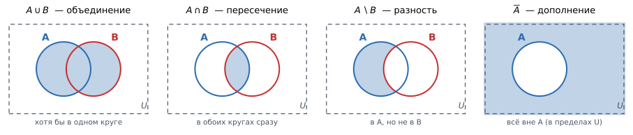
Каждая панель — одна операция; синим закрашен результат. Пунктирный прямоугольник — универсальное множество $U$, то есть весь мир, о котором идёт речь. Обратите внимание на последнюю панель: дополнение $\overline{A}$ вообще не имеет смысла без указания $U$ — «всё остальное» надо от чего-то отсчитывать. Диаграмма Венна — самый быстрый способ не запутаться в значках. Два круга, четыре области: только $A$, только $B$, их перекрытие и внешность обоих. Любая операция — это выбор нескольких из этих четырёх областей:
- Объединение $A \cup B$ — три области из четырёх (всё, кроме внешности).
- Пересечение $A \cap B$ — только перекрытие.
- Разность $A \setminus B$ — левый «полумесяц»: круг $A$ без перекрытия.
- Дополнение $\overline{A}$ — всё, что вне круга $A$.
Значок $\cup$ похож на чашку (cup), в которую ссыпают всё подряд, — это объединение. Значок $\cap$ — перевёрнутая чашка, «крышечка», которая накрывает только общую часть, — это пересечение.
Английские названия тоже помогают: union ($\cup$) и intersection ($\cap$) — те же слова, что в SQL (
UNION) и в Python (set.union,set.intersection).Пусть $A = \{1,2,3\}$, $B = \{3,4,5\}$. Тогда:
- $A \cup B = \{1,2,3,4,5\}$ — тройка попала один раз, а не два: во множестве повторов не бывает.
- $A \cap B = \{3\}$ — единственный общий элемент.
- $A \setminus B = \{1,2\}$ — из $A$ выкинули всё, что встретилось в $B$.
- $B \setminus A = \{4,5\}$ — а это другое множество: разность несимметрична.
$A \setminus B \ne B \setminus A$. Это первая типовая ошибка.
Вторая: $A \setminus B$ не требует, чтобы $B$ лежало внутри $A$. Если в $B$ есть элементы, которых в $A$ нет, они просто игнорируются — «вычесть» лишнее нельзя, и никакой «отрицательности» не возникнет. Например, $\{1,2\} \setminus \{2,7,9\} = \{1\}$.
Несколько соотношений, которые встречаются в выкладках:
- $A \setminus B = A \cap \overline{B}$ — «из $A$ убрать $B$» = «взять $A$ и пересечь с тем, что вне $B$».
- $\overline{A \cup B} = \overline{A} \cap \overline{B}$ — «не (в $A$ или в $B$)» = «не в $A$ и не в $B$» (закон де Моргана).
- $\overline{A \cap B} = \overline{A} \cup \overline{B}$ — второй закон де Моргана.
Заучивать их не надо: любое такое равенство проверяется за десять секунд на диаграмме Венна — закрасьте левую часть, закрасьте правую, сравните.
Мощность $|A|$ — число элементов в множестве. Для объединения работает формула:
$$|A \cup B| = |A| + |B| - |A \cap B|$$
Смысл вычитаемого: если просто сложить, элементы из перекрытия посчитаются дважды — по разу в каждом слагаемом. Поэтому одну лишнюю копию вычитают.
Проверим на примере выше: $|A| = 3$, $|B| = 3$, $|A \cap B| = 1$, значит $|A \cup B| = 3 + 3 - 1 = 5$ — ровно столько элементов в $\{1,2,3,4,5\}$.
- Объединение: $\text{train} \cup \text{val}$ — слить обучающую и валидационную выборки для финального переобучения модели перед деплоем (гиперпараметры уже подобраны, данные жалко терять).
- Пересечение: $\text{users}_A \cap \text{users}_B$ — пользователи, попавшие сразу в обе группы A/B-теста. В корректном тесте это множество должно быть пустым, и его проверка — обязательный санити-чек.
- Разность: $\text{all\_users} \setminus \text{test\_users}$ — все, кроме тестовых: так формируют обучающую выборку, чтобы не заглянуть в тест.
Самый дорогой баг в ML формулируется одной строкой из этого вопроса: $\text{train} \cap \text{test} \ne \varnothing$.
Если хоть один объект попал и в обучение, и в тест, метрика на тесте завышена — модель уже видела ответ. Причём совпадать могут не только строки целиком: если один и тот же пользователь попал в обе выборки разными транзакциями, утечка тоже есть. Поэтому в проде разбивают не по строкам, а по сущности (
GroupKFoldпоuser_id), и проверка «пересечение пустое» делается явно, а не «на глаз».Что такое объединение $A \cup B$ и пересечение $A \cap B$ множеств?
$A \cup B$ — все элементы, входящие хотя бы в одно из множеств. $A \cap B$ — только те, которые входят в оба одновременно. На диаграмме Венна: объединение — оба круга целиком, пересечение — только область перекрытия.
Что такое разность $A \setminus B$ и дополнение $\overline{A}$? Почему разность несимметрична?
$A \setminus B$ — элементы, которые есть в $A$, но нет в $B$; $B \setminus A$ — совсем другое множество, поэтому порядок важен. $\overline{A}$ — всё, что не входит в $A$ в рамках универсального множества $U$; без указания $U$ дополнение не определено.
Как звучат законы де Моргана и как их проверить?
$\overline{A \cup B} = \overline{A} \cap \overline{B}$ и $\overline{A \cap B} = \overline{A} \cup \overline{B}$. Проверяются закрашиванием обеих частей на диаграмме Венна.
Чему равна мощность объединения $|A \cup B|$ и почему там минус?
$|A \cup B| = |A| + |B| - |A \cap B|$. Минус нужен потому, что при простом сложении элементы пересечения считаются дважды, и одну лишнюю копию вычитают.
Как операции над множествами применяются при работе с данными в ML?
Объединение $\text{train} \cup \text{val}$ — финальное переобучение перед деплоем. Пересечение $\text{users}_A \cap \text{users}_B$ — проверка корректности A/B-теста (должно быть пусто). Разность $\text{all} \setminus \text{test}$ — формирование обучающей выборки без тестовых объектов.
Как условие $\text{train} \cap \text{test} = \varnothing$ связано с утечкой данных?
Непустое пересечение означает, что модель на обучении уже видела тестовые объекты, и метрика на тесте завышена. Причём проверять нужно не только совпадение строк, но и совпадение сущностей (например, одного пользователя в обеих выборках) — отсюда разбиение по группам вместо случайного.
-
Функция одной переменной
Функция одной переменной — это правило, по которому каждому значению независимой переменной $x$ из множества $X$ ставится в соответствие единственное значение $y$ из множества $Y$:
$$\begin{aligned} &f(x) = y,\\ &x\mapsto y, \end{aligned}$$
где $x\in X, y\in Y$, при этом $x$ называют прообразом, а $y$ — образом. Здесь $X$ — область определения функции, $Y$ — область её значений.
Если совсем простыми словами: функция — это автомат. Кинул число на вход — получил число на выходе. Причём на одно и то же входное число автомат обязан всегда выдавать один и тот же ответ.
Это то, что превращает произвольное соответствие в функцию, и на собеседовании об этом любят спрашивать.
Правило «$y$ — это такое число, что $y^2 = x$» функцией не является: для $x = 4$ подходят и $y = 2$, и $y = -2$ — два ответа вместо одного. Чтобы получить функцию, приходится договориться брать только неотрицательный корень: $y = \sqrt{x} \ge 0$.
При этом в обратную сторону ограничений нет: разным $x$ разрешено давать одинаковый $y$. У $f(x) = x^2$ и $x = -3$, и $x = 3$ дают 9 — это нормально.
Область определения $X$ — это множество тех $x$, на которых формула вообще имеет смысл. Три типовых ограничения:
- деление: в $f(x) = \frac{1}{x}$ точка $x = 0$ выброшена, область определения — $\mathbb{R} \setminus \{0\}$;
- корень чётной степени: в $f(x) = \sqrt{x}$ область определения — $[0, +\infty)$;
- логарифм: в $f(x) = \ln x$ область определения — $(0, +\infty)$, строго положительные числа.
Последнее — прямая причина того, почему в реализациях кросс-энтропии пишут
log(p + 1e-9): при $p = 0$ логарифм не определён, и без этой добавки получится-infилиnan.Область определения — вся прямая $\mathbb{R}$ (квадрат можно взять от любого числа). Область значений — $[0, +\infty)$: квадрат никогда не бывает отрицательным, но любое неотрицательное число достижимо. График — парабола.
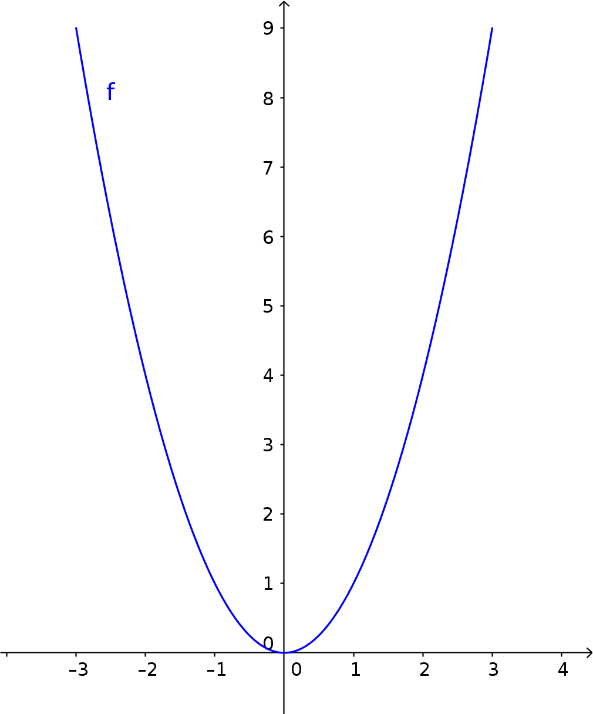
График функции одной переменной на примере параболы $y = x^2$: слева от нуля функция убывает, справа возрастает, наименьшее значение 0 достигается в вершине. График — это множество точек $(x, f(x))$ на плоскости: по горизонтали откладываем вход, по вертикали — выход. Ценность в том, что все свойства функции становятся видимыми глазом:
- где функция растёт, а где убывает — это подъёмы и спуски кривой;
- область значений — какие высоты вообще достигаются (проекция графика на вертикальную ось);
- корни ($f(x) = 0$) — точки пересечения с горизонтальной осью;
- разрывы — места, где кривую приходится рисовать с отрывом руки от бумаги.
Есть и обратный критерий: кривая на плоскости является графиком функции тогда и только тогда, когда любая вертикальная прямая пересекает её не более одного раза (то самое «единственное значение»). Окружность этот тест не проходит — она не график функции.
Кирпичики, из которых собирают всё остальное:
- Степенные: $y = x^\alpha$
- Показательные: $y = a^x$
- Логарифмические: $y = \log_a x$
- Тригонометрические: $y = \sin x$, $y = \cos x$, $y = \tan x$
- Обратные тригонометрические: $y = \arcsin x$, $y = \arccos x$, $y = \arctan x$
Это разные вещи, хотя обе называются «степень»:
- степенная $x^2$ — переменная стоит в основании, показатель фиксирован;
- показательная $2^x$ — переменная стоит в показателе, основание фиксировано.
Ведут себя они совершенно по-разному: $x^2$ при $x = 10$ даёт 100, а $2^x$ при $x = 10$ даёт 1024, и дальше разрыв только растёт. Отсюда и выражение «экспоненциальный рост» — он всегда обгоняет любой полиномиальный.
- $e^x$ (экспонента) — в softmax и в плотности нормального распределения. Её главное свойство: она всегда положительна, поэтому ей удобно превращать произвольное число в «что-то, что можно нормировать в вероятность».
- $\ln x$ — в логарифмическом правдоподобии и в кросс-энтропии. Ключевое свойство: $\ln(ab) = \ln a + \ln b$ превращает произведение в сумму. Именно поэтому логарифм берут в методе максимального правдоподобия: произведение тысяч вероятностей мгновенно уходит в машинный ноль, а сумма логарифмов — нет.
- $\sigma(x) = \frac{1}{1+e^{-x}}$ (сигмоида) — сжимает любое вещественное число в отрезок $(0,1)$, то есть превращает «сырой» выход модели в вероятность.
- $x^2$ — в MSE: квадрат делает ошибку положительной и штрафует большие промахи сильнее маленьких.
Если $y = f(u)$ и $u = g(x)$, то $y = f(g(x))$ — сложная функция, или суперпозиция функций.
Простыми словами: два автомата поставили в цепочку — выход первого подали на вход второму.
Здесь два шага: сначала внутренняя функция $u = x^2$, затем внешняя $y = \sin(u)$. Подставим $x = 2$: сначала $u = 4$, потом $y = \sin 4 \approx -0{,}757$.
Порядок принципиален: $\sin(x^2)$ и $(\sin x)^2$ — разные функции. При $x = 2$ вторая даёт $(\sin 2)^2 \approx 0{,}827$.
Именно суперпозиции требуется правило цепочки (chain rule) для дифференцирования — то самое, на котором стоит алгоритм обратного распространения ошибки (backpropagation) в нейросетях. Нейросеть — это и есть длинная цепочка вложенных функций-слоёв.
Если $y = f(x)$ взаимно однозначно отображает $X$ на $Y$ (то есть разным $x$ отвечают разные $y$), то $x = f^{-1}(y)$ — обратная функция к $f$: она отображает $Y$ обратно в $X$ и удовлетворяет $f^{-1}(f(x)) = x$.
Простыми словами: обратная функция «отматывает назад». Если прямая функция превратила 3 в 9, обратная обязана превратить 9 обратно в 3.
Если функция склеивает два разных входа в один выход, отмотать назад невозможно — непонятно, из какого именно входа мы пришли.
$f(x) = x^2$ на всей прямой обратной функции не имеет: по $y = 9$ нельзя восстановить, было это $3$ или $-3$. Выход — сузить область определения: на $[0, +\infty)$ функция уже взаимно однозначна, и обратной к ней будет $\sqrt{y}$.
Ровно поэтому $\arcsin$ выдаёт значения только из $[-\frac{\pi}{2}, \frac{\pi}{2}]$, хотя $\sin$ принимает значение $0{,}5$ бесконечно много раз: из всех подходящих ответов договорились брать один.
Графики $f$ и $f^{-1}$ симметричны относительно прямой $y = x$. Причина простая: обратная функция получается заменой ролей осей — то, что было входом, стало выходом. Отсюда, например, знакомая картинка: график $\ln x$ — это зеркальное отражение графика $e^x$.
Верхний индекс $-1$ у функции означает обратную функцию, а не «минус первую степень».
$\sin^{-1}(x) = \arcsin(x)$, а вовсе не $\frac{1}{\sin x}$. Проверьте на числах: $\sin^{-1}(0{,}5) = \frac{\pi}{6} \approx 0{,}524$, тогда как $\frac{1}{\sin 0{,}5} \approx 2{,}086$ — не просто другое число, а число другого смысла.
Путаницу усиливает то, что для степеней тот же индекс пишут иначе: $\sin^2 x$ означает именно $(\sin x)^2$. Единственное надёжное правило: $-1$ у имени функции — это «обратная».
Links
Ресурс Описание Essence of calculus 3blue1bown / video / Eng / 165 min Плейлист подходит для интуитивного освоения базы матанализа (в контексте МЛ). Что такое функция одной переменной и что называется её областью определения и областью значений?
Функция $f: X \to Y$ — правило, ставящее каждому $x \in X$ единственное значение $y \in Y$. Область определения $X$ — допустимые значения аргумента, область значений $Y$ — те значения, которые функция реально принимает.
Почему требование «единственное значение» существенно? Может ли разным $x$ отвечать один $y$?
Без него соответствие не будет функцией: правило «$y^2 = x$» даёт для $x=4$ сразу два ответа. Обратное же разрешено: разные $x$ вполне могут давать одинаковый $y$ (например, $\pm 3 \mapsto 9$ у $x^2$).
Что такое сложная функция (суперпозиция) и зачем она нужна?
Если $y = f(u)$ и $u = g(x)$, то $y = f(g(x))$ — сложная функция, цепочка из двух правил. Дифференцируется правилом цепочки (chain rule), которое лежит в основе backpropagation: нейросеть — это композиция слоёв.
Когда у функции существует обратная и чем $f^{-1}(x)$ отличается от $\frac{1}{f(x)}$?
Обратная существует, когда функция взаимно однозначна (разным входам — разные выходы); иначе область определения сужают. $f^{-1}$ — это «отмотка назад», $f^{-1}(f(x)) = x$; например $\arcsin(x) = \sin^{-1}(x) \neq \frac{1}{\sin x}$.
Как связаны графики $f$ и $f^{-1}$?
Они симметричны относительно прямой $y = x$, потому что обратная функция меняет местами роли входа и выхода. Например, графики $e^x$ и $\ln x$ — зеркальные отражения друг друга.
Какие элементарные функции встречаются в ML-формулах чаще всего и почему именно они?
$e^x$ — в softmax и нормальном распределении (всегда положительна). $\ln x$ — в кросс-энтропии и MLE (превращает произведение вероятностей в сумму и спасает от машинного нуля). $\sigma(x)$ — сжимает выход модели в $(0,1)$. $x^2$ — в MSE, штрафует крупные ошибки сильнее мелких.
-
Функции нескольких переменных
Функция нескольких переменных — это правило, по которому каждой точке $\mathbf{x}=(x_1, x_2, ..., x_n)$ из области $D \subset \mathbb{R}^n$ ставится в соответствие единственное значение $y$:
$$y = f(\mathbf{x})=f(x_1, x_2, ..., x_n)$$
Здесь $n$ — число переменных (аргументов), $D$ — область определения функции в $n$-мерном пространстве.
Если совсем простыми словами: тот же автомат, что и раньше, но теперь на вход подаётся не одно число, а сразу несколько — а на выходе по-прежнему одно.
Это принципиальный момент. Функция $f: \mathbb{R}^n \to \mathbb{R}$ берёт много чисел и отдаёт одно. Такие функции называют скалярными — и именно они интересны в оптимизации: чтобы что-то минимизировать, нужна одна величина, которую можно сравнивать («это хуже, а это лучше»).
Функция потерь ровно такова: на вход — миллионы параметров модели, на выход — одно число «насколько плохо». Если бы на выходе был вектор, вопрос «где минимум» потерял бы смысл: непонятно, какой из двух векторов «меньше».
Бывают и вектор-функции $f: \mathbb{R}^n \to \mathbb{R}^m$ (много входов, много выходов) — например, слой нейросети. Их производная — это уже не число и не вектор, а матрица (якобиан).
Область определения — вся плоскость $\mathbb{R}^2$: подставить можно любую пару чисел. Область значений — $[0, +\infty)$: сумма двух квадратов не бывает отрицательной.
График — параболоид вращения, то есть поверхность, получающаяся вращением параболы вокруг вертикальной оси. Форма «чаши» с единственной нижней точкой в $(0,0)$.
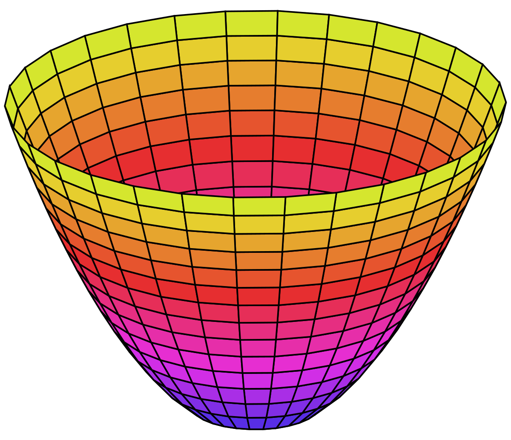
Параболоид вращения $f(x, y) = x^2 + y^2$ — график функции двух переменных. В отличие от кривой на плоскости, это уже поверхность в трёхмерном пространстве. У функции одной переменной график — кривая на плоскости: одна ось на вход, одна на выход. У функции двух переменных нужно уже три оси: две на входы и одна на выход, — и график становится поверхностью в трёхмерном пространстве.
Дальше рисовать нечем: у функции трёх переменных график живёт в четырёхмерном пространстве, а никто из нас четырёхмерных картинок не видит. Поэтому в многомерном случае от картинок отказываются и опираются на формулы — либо смотрят на двумерные срезы и проекции, о которых ниже.
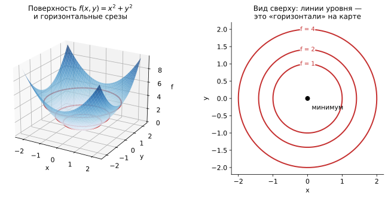
Слева — та же функция $f(x,y)=x^2+y^2$ как поверхность; красные кольца — сечения поверхности горизонтальными плоскостями на высотах $f=1,2,4$. Справа — те же кольца, но вид строго сверху: это и есть линии уровня. Чем гуще линии, тем круче склон; центр, где линии стягиваются в точку, — минимум. Линия уровня — множество точек, где функция принимает одно и то же значение: $\{(x,y) \mid f(x,y) = c\}$.
Это в точности горизонтали на топографической карте: идя вдоль такой линии, вы не поднимаетесь и не спускаетесь. Приём тот же, каким картографы рисуют горы на плоском листе, и он даёт две вещи бесплатно:
- где круто, а где полого — там, где линии идут густо, склон крутой; где редко — почти плато;
- форма ландшафта — концентрические окружности означают «правильную чашу», а вытянутые эллипсы — овраг, узкий в одну сторону и пологий в другую.
Именно поэтому графики обучения и картинки «как работает оптимизатор» почти всегда рисуют в линиях уровня, а не в 3D: по ним видно то, ради чего смотрят.
Если линии уровня — вытянутые эллипсы, функция по одному направлению убывает резко, а по другому почти не меняется. Градиентный спуск в такой «долине» начинает скакать поперёк неё вместо того, чтобы двигаться вдоль, и сходится мучительно медленно.
Отсюда растут сразу несколько практик: нормализация признаков (делает эллипсы круглее), momentum (гасит поперечные колебания) и адаптивные оптимизаторы вроде Adam (масштабируют шаг по каждой координате отдельно). Все они решают одну и ту же геометрическую проблему.
Модель $\hat y = w_0 + w_1 x$ с двумя параметрами ($w_0$ — смещение, $w_1$ — наклон). Ошибка на выборке:
$$L(w_0, w_1) = \frac{1}{n}\sum_{i=1}^n (y_i - w_0 - w_1 x_i)^2$$
Ключевое наблюдение: переменными здесь являются $w_0$ и $w_1$, а не $x$. Данные $x_i, y_i$ уже собраны и зафиксированы — они превратились в константы. Мы крутим ручки $w_0$ и $w_1$ и смотрим, как меняется ошибка.
Это функция двух переменных. Её график — поверхность-параболоид над плоскостью $(w_0, w_1)$, а минимум — точка, в которой параметры настроены оптимально.
Переход «данные — константы, параметры — переменные» новичкам даётся тяжелее всего, но без него не понять обучение.
Обычно функцию $y = w_0 + w_1 x$ читают как «зависимость $y$ от $x$». В обучении читать надо наоборот: выборка дана раз и навсегда, а ищем мы параметры. Поэтому и ландшафт, по которому едет градиентный спуск, — это ландшафт в пространстве параметров: по осям отложены $w_0$ и $w_1$, а не признаки объектов.
У линейной регрессии этот ландшафт — идеальная выпуклая чаша с единственным минимумом. У нейросети — пространство размерности в миллионы с оврагами, плато и седловыми точками; тот же принцип, но геометрия несопоставимо сложнее.
Функция потерь $L(\theta)$ зависит от всех параметров модели $\theta = (\theta_1, \dots, \theta_n)$ сразу, и $n$ бывает порядка миллиардов. Никакой «формулой минимума» такое не решается — минимум ищут итеративно, шагая по антиградиенту.
Обратите внимание на разрыв между интуицией и реальностью: рисуем мы всегда две переменные, а работаем с миллиардами. Двумерная картинка — не иллюстрация настоящего ландшафта, а модель, на которой удобно объяснять механику. Часть интуиции при переходе в высокие размерности ломается — например, локальные минимумы там встречаются реже, чем седловые точки.
Многомерность приносит качественно новые эффекты, которых в одномерном случае не было:
- появляются седловые точки — вдоль одного направления минимум, вдоль другого максимум (в 1D такого не бывает вовсе);
- направлений бесконечно много: спрашивать «функция возрастает или убывает?» без указания направления бессмысленно;
- в высоких размерностях почти весь объём шара сосредоточен у его поверхности, и геометрическая интуиция из 2D начинает подводить.
Поэтому 2D-картинки — рабочий инструмент объяснения, но не источник строгих выводов о поведении реальных моделей.
Что такое функция нескольких переменных?
Функция $f: D \subset \mathbb{R}^n \to \mathbb{R}$, ставящая каждой точке $\mathbf{x} = (x_1, \ldots, x_n)$ единственное значение $y = f(x_1, \ldots, x_n)$. Входов много, выход один.
Почему для оптимизации важно, что выход скалярный?
Минимизировать можно только то, что сравнимо: одно число «лучше/хуже» другого. Если бы функция потерь выдавала вектор, понятие минимума потеряло бы смысл.
Что такое линии уровня и что по ним видно?
Линия уровня — множество точек с одинаковым значением функции: $f(x,y) = c$. Это горизонтали топографической карты: густые линии означают крутой склон, редкие — пологий, вытянутые эллипсы — овраг, концентрические окружности — симметричную чашу.
Почему вытянутые линии уровня замедляют градиентный спуск и что с этим делают?
В «овраге» градиент направлен в основном поперёк долины, и спуск колеблется вместо движения к минимуму. Помогают нормализация признаков, momentum и адаптивные оптимизаторы (Adam), масштабирующие шаг по координатам.
Как выглядит функция потерь линейной регрессии с двумя параметрами и что здесь переменные?
$$L(w_0, w_1) = \frac{1}{n}\sum_{i=1}^n (y_i - w_0 - w_1 x_i)^2$$
Переменными являются параметры $w_0, w_1$, а данные $x_i, y_i$ — зафиксированные константы. График — параболоид над плоскостью параметров, его минимум даёт оптимальные веса.
Каково геометрическое отличие графика функции одной переменной от функции двух переменных, и почему трёх переменных уже не рисуют?
Одна переменная — кривая на плоскости, две — поверхность в трёхмерном пространстве. Для трёх нужно четырёхмерное пространство, которое не изобразить, — поэтому переходят к срезам, линиям уровня и формулам.
-
Композиция
Композиция — это последовательное применение двух (или более) объектов: функций, матриц, преобразований.
Если есть две функции $f: A \to B$ (переводящая $A$ в $B$) и $g: B \to C$ (переводящая $B$ в $C$), то их композиция — новая функция $g \circ f : A \to C$, обозначаемая так:
$$(g \circ f)(x) = g(f(x))$$
Простыми словами: композиция — это конвейер. Результат одной операции сразу подаётся на вход следующей, и весь конвейер целиком можно рассматривать как одну большую операцию.
В записи $g \circ f$ первой применяется $f$ — та, что написана справа, ближе к аргументу. Порядок в записи обратен порядку выполнения.
Мнемоника простая: смотрите на развёрнутую форму $g(f(x))$. Чтобы вычислить её, надо сначала раскрыть внутреннюю скобку — то есть посчитать $f(x)$, — и только потом применить $g$. Работаем изнутри наружу.
Пусть $f(x) = x + 1$, $g(x) = x^2$. Возьмём $x = 3$:
- $(g \circ f)(3) = g(f(3)) = g(4) = 16$ — сначала прибавили, потом возвели в квадрат;
- $(f \circ g)(3) = f(g(3)) = f(9) = 10$ — сначала возвели, потом прибавили.
16 против 10. Композиция некоммутативна: $g \circ f \ne f \circ g$ в общем случае. Это ровно та же логика, что «надеть носки, потом ботинки» ≠ «надеть ботинки, потом носки».
Чтобы записать $g \circ f$, выход $f$ должен помещаться во вход $g$: область значений $f$ обязана лежать в области определения $g$.
Пример несостыковки: $f(x) = -x^2$ выдаёт неположительные числа, а $g(u) = \ln u$ принимает только строго положительные. Композиция $\ln(-x^2)$ не определена ни при одном вещественном $x$: выражение $-x^2$ никогда не бывает положительным.
Это не педантизм: ровно эта проверка в коде выглядит как «размерность выхода слоя должна совпадать с размерностью входа следующего», и несовпадение даёт
shape mismatchпри первом же прогоне.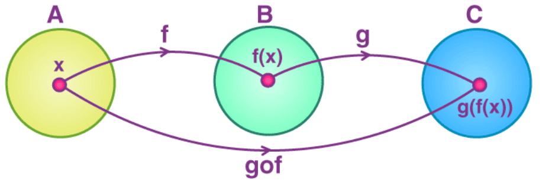
Композиция функций. Из $A$ в $C$ можно прийти двумя путями: сначала перейти из $A$ в $B$ по функции $f$ и затем из $B$ в $C$ по функции $g$, либо сразу перейти из $A$ в $C$ функцией $g \circ f$. Это коммутативная диаграмма — способ рисовать композиции стрелками. Смысл картинки: длинный путь через $B$ и короткая стрелка $g \circ f$ приводят в одну и ту же точку.
Именно в этом ценность композиции: промежуточный результат можно спрятать. Снаружи $g \circ f$ выглядит как одна функция из $A$ в $C$, и то, что внутри было промежуточное пространство $B$, никак не проявляется в её «интерфейсе».
Из этого свойства растёт вся модульность в ML: обученную сеть можно использовать как одну функцию «картинка $\to$ класс», не думая о том, что внутри 50 слоёв.
Для линейных отображений композиция превращается в умножение матриц. Если $A$ и $B$ — матрицы, то $C = AB$ описывает применение сначала $B$, потом $A$ (та же логика «справа налево», что у $g \circ f$).
$$(AB)\mathbf{x} = A(B\mathbf{x})$$
Отсюда сразу два известных факта:
- умножение матриц некоммутативно ($AB \ne BA$) — потому что композиция некоммутативна;
- размерности должны стыковаться ($m \times k$ на $k \times n$) — потому что выход первого отображения должен помещаться во вход второго.
То есть правила матричного умножения — не произвольная договорённость, а прямое следствие того, что матрицы описывают композицию преобразований. Развёрнутый пример — SVD, где одно преобразование раскладывается в композицию поворота, растяжения и ещё одного поворота.
Нейросеть буквально является композицией: каждый слой — функция, выход слоя подаётся на вход следующему.
$$\hat y = f_L \circ f_{L-1} \circ \dots \circ f_2 \circ f_1 (x)$$
Слой обычно сам является композицией двух шагов: линейного преобразования и нелинейности, $f_i(\mathbf{h}) = \sigma(W_i \mathbf{h} + b_i)$.
Отсюда следует ответ на классический вопрос собеседования — зачем вообще нужны функции активации. Композиция двух линейных отображений снова линейна: $W_2(W_1 x) = (W_2 W_1)x$, и это просто одна матрица. Без нелинейности $\sigma$ сеть любой глубины схлопывается в одно линейное преобразование, и все её слои становятся бессмысленными. Нелинейность — то, что не даёт композиции схлопнуться.
Композиция дифференцируется правилом цепочки:
$$\frac{d}{dx}\,(g \circ f)(x) = g'(f(x)) \cdot f'(x)$$
Backpropagation — это ровно применение этого правила к цепочке из $L$ слоёв: градиент прогоняется от последнего слоя к первому, домножаясь на производную очередного звена. Отсюда же и знаменитая проблема затухающих градиентов: если каждое из 50 звеньев даёт множитель около $0{,}5$, произведение получается порядка $0{,}5^{50} \approx 10^{-15}$ — до первых слоёв сигнал попросту не доходит.
Малый шаг $dx$ первая функция растягивает в $f'(x)$ раз, вторая — ещё в $g'(u)$ раз: производная композиции равна произведению производных. Нейросеть — та же цепочка из десятков функций, и backpropagation перемножает локальные производные слой за слоем. Что такое композиция функций $g \circ f$ и в каком порядке она применяется?
Если $f: A \to B$ и $g: B \to C$, то $(g \circ f)(x) = g(f(x))$ — новая функция $A \to C$. Читается справа налево: первой применяется $f$, результат подаётся в $g$.
Коммутативна ли композиция? Приведите контрпример.
Нет. Для $f(x) = x+1$, $g(x) = x^2$ и $x = 3$: $(g \circ f)(3) = 16$, а $(f \circ g)(3) = 10$.
Когда композиция определена?
Когда область значений $f$ лежит в области определения $g$ — выход первой функции должен помещаться во вход второй. В нейросетях это то же требование, что совпадение размерностей соседних слоёв.
Что соответствует композиции функций в случае матриц?
Композиция линейных отображений — это произведение матриц $C = AB$: сначала применяется $B$, затем $A$. Отсюда некоммутативность умножения матриц и требование стыковки размерностей.
Почему нейросеть без функций активации бессмысленна?
Сеть — композиция слоёв, а композиция линейных отображений снова линейна: $W_2(W_1x) = (W_2W_1)x$. Без нелинейности сеть любой глубины схлопывается в одно линейное преобразование.
Почему понимание композиции важно для backpropagation?
Chain rule — правило дифференцирования композиции: $\frac{d}{dx}(g \circ f)(x) = g'(f(x)) \cdot f'(x)$. Backpropagation применяет его к цепочке слоёв, перемножая производные звеньев. Из этого же произведения возникает проблема затухающих градиентов в глубоких сетях.
-
Числовые последовательности и предел
Последовательность — это упорядоченный бесконечный набор чисел: $x_1, x_2, x_3, \dots$. Каждому номеру $n \in \mathbb{N}$ отвечает свой член $x_n$ — то есть последовательность это просто функция, у которой аргумент пробегает натуральные числа.
Предел последовательности $x_n$ — это число $L$, к которому $x_n$ стремится при $n \to \infty$:
$$\lim_{n \to \infty} x_n = L$$
Простыми словами: как далеко бы мы ни ушли по номерам, начиная с какого-то момента все члены последовательности сидят вплотную к $L$ и больше оттуда не выходят.
Формулировка «приближается к $L$» на слух понятна, но неточна: последовательность $x_n = 2 + \frac{1}{n}$ приближается к 2, но и последовательность $x_n = 2 + \frac{1}{n} + 1$ тоже «приближается» — к трём. Нужна проверяемая формулировка, и она такая:
$$\forall \varepsilon > 0 \ \ \exists N: \ \ \forall n > N \ \ |x_n - L| < \varepsilon$$
Расшифруем каждый значок:
- $\varepsilon$ (эпсилон) — любая, сколь угодно маленькая, точность, которую выбирает придирчивый оппонент;
- $\exists N$ — а мы обязаны предъявить номер, начиная с которого требуемая точность выдерживается;
- $|x_n - L| < \varepsilon$ — «расстояние от $x_n$ до $L$ меньше $\varepsilon$».
Целиком: «какую бы точность ни потребовали, найдётся номер, после которого последовательность её выдерживает — и не нарушает больше никогда».
Точки $a_n$ колеблются вокруг предела $L$ и прижимаются к нему. Для каждой полоски $\pm\varepsilon$ находится номер $N(\varepsilon)$, начиная с которого все точки внутри полоски (синие). Сужаем $\varepsilon$ — $N$ растёт, но всегда существует: это и есть определение предела. Определение предела удобно представлять как игру. Оппонент называет $\varepsilon$ — рисует коридор вокруг $L$. Мы отвечаем номером $N$ — обещаем, что дальше него ни один член последовательности из коридора не выпрыгнет.
Если у нас есть выигрышный ответ на любой $\varepsilon$, даже на $\varepsilon = 10^{-100}$, — предел существует. Если оппонент может назвать такой узкий коридор, что подходящего $N$ не найдётся ни при каких стараниях, — предела нет.
На правой панели именно этот случай: возьмите $\varepsilon = 0{,}5$ вокруг любого числа — и половина членов всегда окажется снаружи, сколь угодно далеко по номерам.
$$1,\ \frac{1}{4},\ \frac{1}{9},\ \frac{1}{16},\ \frac{1}{25},\ \dots \longrightarrow 0$$
Проверим определение честно. Пусть потребовали $\varepsilon = 0{,}01$. Нужно, чтобы $\frac{1}{n^2} < 0{,}01$, то есть $n^2 > 100$, то есть $n > 10$. Значит, годится $N = 10$: все члены с одиннадцатого и дальше лежат ближе чем на 0,01 к нулю.
Потребуют $\varepsilon = 10^{-6}$ — возьмём $N = 1000$. Рецепт есть на любой $\varepsilon$, поэтому предел равен нулю.
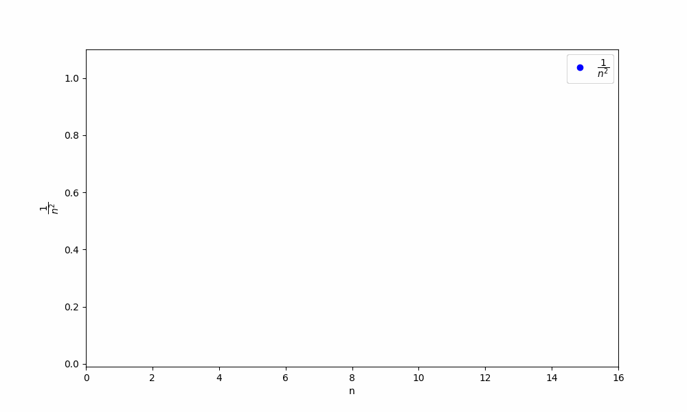
Убывание последовательности $\left\{\frac{1}{n^2}\right\}$: члены становятся всё мельче и прижимаются к нулю, но ни один из них нуля не достигает. Ни один член последовательности $\frac{1}{n^2}$ не равен нулю: $\frac{1}{n^2} > 0$ при любом $n$. Тем не менее предел равен нулю.
Это не парадокс, а суть понятия: предел — характеристика поведения на бесконечности, а не значение в какой-то точке. Достигать его последовательность не обязана. Бывает и наоборот: у постоянной последовательности $x_n = 5$ предел равен 5 и достигается каждым членом.
Не всякая последовательность имеет предел. Возможны три исхода:
- Сходится — есть конечный предел $L$. Пример: $\frac{1}{n^2} \to 0$.
- Расходится к бесконечности — члены неограниченно растут: $x_n = n^2 \to +\infty$. Формально предела-числа нет, но пишут $\lim x_n = \infty$, чтобы описать характер расходимости.
- Расходится колебаниями — члены прыгают и никуда не сходятся: $x_n = (-1)^n$ бесконечно чередует $-1$ и $1$.
Обе формы расходимости в обучении моделей видны невооружённым глазом: лосс, улетающий в
nanиз-за слишком большого learning rate, — это расходимость к бесконечности; лосс, бесконечно скачущий вокруг одного уровня и не убывающий, — расходимость колебаниями.Практически каждое понятие дальше определяется через предел:
- производная — предел разностного отношения при $\Delta x \to 0$;
- интеграл — предел сумм площадей узких прямоугольников;
- непрерывность — совпадение предела функции в точке с её значением;
- сумма ряда — предел частичных сумм.
Причина одна: почти всё интересное в анализе связано с «бесконечно малыми» и «бесконечно большими» величинами, а предел — единственный аккуратный способ говорить о них, не постулируя мистических «бесконечно малых чисел».
Обучение даёт последовательность значений функции потерь по эпохам: $L^{(1)}, L^{(2)}, L^{(3)}, \dots$ — самая настоящая числовая последовательность.
Фраза «модель сошлась» — неформальный аналог сходимости: значения перестали заметно убывать и стабилизировались около некоторого уровня. На практике «перестали заметно» проверяют порогом — например,
early stoppingостанавливает обучение, если за 10 эпох улучшение меньше $10^{-4}$.Обратите внимание: это буквально та же игра в $\varepsilon$ и $N$, только с конкретным $\varepsilon$ вместо «любого» и с конечным числом эпох вместо бесконечности. Инженерная проверка сходимости — усечённая версия математической.
Стабилизация лосса не означает, что модель попала в хорошую точку. Возможные причины плато:
- застряли в локальном минимуме или на плато ландшафта потерь;
- learning rate слишком мал и шаги стали ничтожными — движение есть, но незаметное;
- модель переобучилась: train-лосс сошёлся, а validation-лосс уже растёт.
Поэтому смотреть только на train-лосс недостаточно: сходимость — про поведение чисел, а не про качество модели.
Что такое предел последовательности $\lim_{n \to \infty} x_n = L$ на формальном языке?
$\forall \varepsilon > 0\ \exists N:\ \forall n > N\ |x_n - L| < \varepsilon$ — какую бы точность $\varepsilon$ ни потребовали, найдётся номер $N$, после которого все члены отличаются от $L$ меньше чем на $\varepsilon$ и не выходят из этого коридора.
Достигает ли последовательность своего предела?
Не обязана. $x_n = \frac{1}{n^2} \to 0$, но ни один член не равен нулю. Предел описывает поведение на бесконечности, а не значение в конкретной точке; при этом постоянная последовательность свой предел достигает.
Какие бывают варианты поведения последовательности, если предела нет?
Расходимость к бесконечности ($x_n = n^2 \to \infty$) и расходимость колебаниями ($x_n = (-1)^n$ прыгает между $-1$ и $1$, ни в какой узкий коридор не загоняется).
Как понятие предела связано с производной?
Производная определяется как предел разностного отношения: $f'(x) = \lim_{\Delta x \to 0} \dfrac{f(x+\Delta x)-f(x)}{\Delta x}$. Через предел определяются также интеграл, непрерывность и сумма ряда.
Что означает фраза «нейросеть сошлась» с точки зрения математики?
Значения функции потерь по эпохам $L^{(t)}$ образуют последовательность; сходимость означает, что при росте $t$ они стремятся к пределу, то есть перестают существенно убывать. На практике это проверяют порогом (early stopping) — усечённая версия $\varepsilon$-$N$ определения.
Гарантирует ли стабилизация лосса, что модель обучена хорошо?
Нет. Плато может означать локальный минимум, слишком малый learning rate или переобучение (train-лосс сошёлся, а validation растёт). Сходимость — свойство числовой последовательности, а не показатель качества модели.
-
Непрерывность и сходимость
Функция непрерывна в точке $x_0$, если
$$\lim_{x \to x_0} f(x) = f(x_0)$$
Простыми словами: куда функция «целится» при подходе к точке, туда она и попадает. Предсказание по соседним значениям совпало с реальным значением в самой точке — прыжка нет.
Запись $\lim_{x \to x_0} f(x) = f(x_0)$ выглядит как одно равенство, но требует сразу трёх вещей:
- $f(x_0)$ существует — точка входит в область определения. У $f(x) = \frac1x$ в нуле нет значения, поэтому и о непрерывности там речи нет.
- Предел существует — приближаясь слева и справа, мы приходим в одно и то же место.
- Они совпадают — предел равен значению, а не «почти равен».
Нарушение любого из трёх даёт разрыв. Если функция непрерывна в каждой точке своей области определения, говорят просто «функция непрерывна».
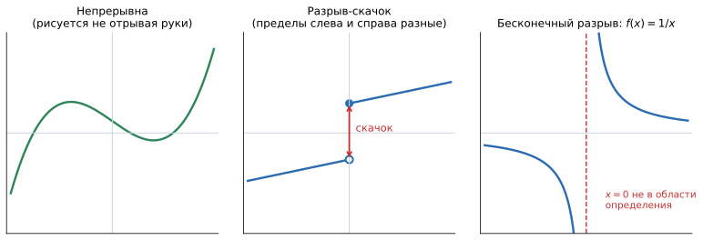
Слева — непрерывная функция: кривую можно нарисовать, не отрывая руки от бумаги. В центре — разрыв-скачок: слева функция стремится к одному значению, справа к другому, и красная стрелка показывает высоту прыжка; закрашенная точка — реальное значение функции, полая — то, к чему стремится другая ветвь. Справа — бесконечный разрыв: при подходе к нулю значения улетают в бесконечность, никакого конечного предела нет. На центральной панели видна суть скачка: предел слева (подходим со стороны меньших $x$) и предел справа (со стороны больших) — разные числа.
Обозначаются они $\lim_{x \to x_0^-} f(x)$ и $\lim_{x \to x_0^+} f(x)$. Обычный (двусторонний) предел существует только тогда, когда оба односторонних существуют и равны между собой. Если они разные — предела нет, и точка $x_0$ автоматически становится точкой разрыва.
Житейская аналогия: тариф «до 10 кг — 300 ₽, свыше — 800 ₽». При подходе к 10 кг снизу цена стремится к 300, сверху — к 800. Скачок в 500 ₽ — и есть разрыв.
- Устранимый — предел существует, но значение в точке либо отсутствует, либо задано «неправильно». Функцию можно «починить», доопределив её пределом. Пример: $f(x) = \frac{\sin x}{x}$ не определена в нуле, но $\lim_{x\to 0} \frac{\sin x}{x} = 1$, поэтому положив $f(0) = 1$, получаем непрерывную функцию.
- Скачок (разрыв первого рода) — оба односторонних предела конечны, но различны. Починить нельзя: какое значение ни поставь, одна из сторон всё равно не сойдётся.
- Бесконечный (второго рода) — хотя бы один односторонний предел бесконечен, как у $\frac1x$ в нуле.
В ML практически важен именно скачок: любая функция вида «если больше порога, то A, иначе B» разрывна по построению.
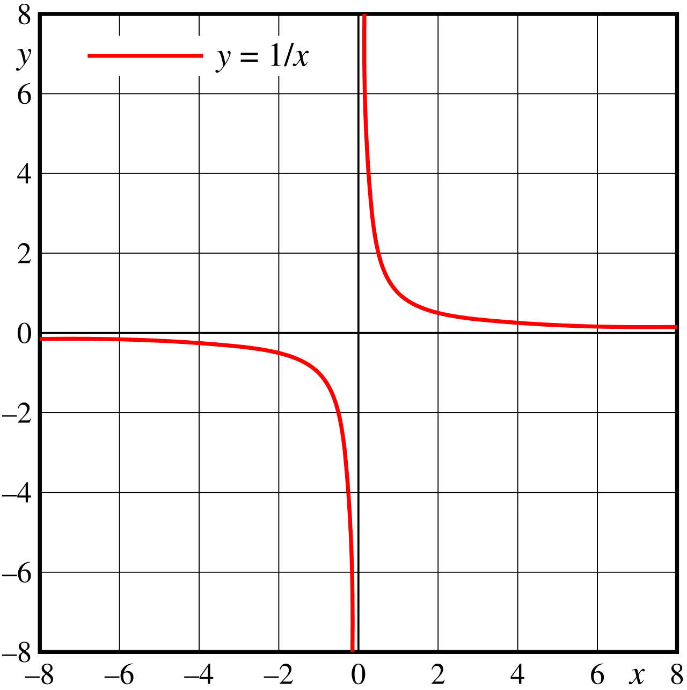
Функция $f(x)=\frac{1}{x}$ непрерывна на множестве $\mathbb{R} \setminus \{0\}$ (всё, кроме 0), но в точке $x=0$ не определена, и потому график распадается на две ветви. Формально корректный ответ: функция $\frac1x$ непрерывна на всей своей области определения $\mathbb{R} \setminus \{0\}$. В нуле она не непрерывна и не разрывна — её там просто нет.
Это типичный вопрос-ловушка. Говорить «функция разрывна в нуле» — распространённая небрежность: разрыв предполагает, что точка входит в область определения, но условие непрерывности нарушено.
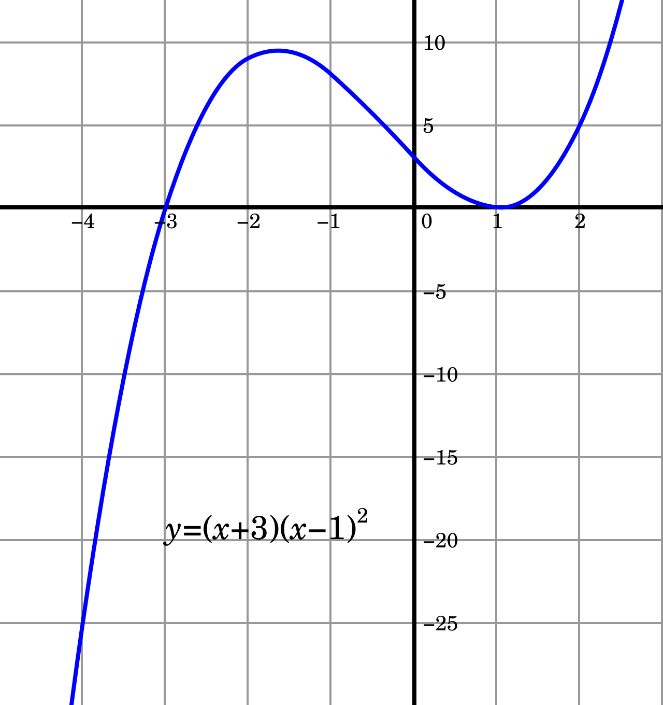
График кубической функции не имеет разрывов или пропусков: сколь угодно малое изменение $x$ даёт малое изменение $f(x)$. Функция непрерывна на всей числовой прямой. Все многочлены непрерывны везде. Непрерывны также $e^x$, $\sin x$, $\cos x$; $\ln x$ и $\sqrt{x}$ — на своих областях определения. Сумма, произведение и композиция непрерывных функций снова непрерывны — именно поэтому непрерывность нейросети из непрерывных слоёв получается автоматически.
Обучение градиентными методами опирается на цепочку: непрерывность $\to$ возможность дифференцировать $\to$ градиент $\to$ шаг оптимизации.
В точке разрыва производной нет — сколь угодно малое изменение параметра меняет ответ скачком, и вопрос «в какую сторону двигаться, чтобы стало чуть лучше» теряет смысл. Функция потерь обязана быть по меньшей мере непрерывной, а на практике — ещё и дифференцируемой почти всюду.
Есть и вторая сторона: непрерывность означает устойчивость. Малое изменение входа даёт малое изменение выхода, а значит, шум в данных не превращается в непредсказуемый результат.
Хочется обучать модель прямо на той метрике, которая нужна бизнесу, — например на доле правильных ответов. Так делать нельзя, и причина ровно в этом вопросе.
Accuracy содержит порог: предсказание засчитывается как класс 1 при $\hat y > 0{,}5$. Сдвиньте параметры чуть-чуть — accuracy либо не изменится вовсе, либо прыгнет ступенькой, когда какой-то объект пересечёт порог. Такая функция кусочно-постоянна: её производная равна нулю почти везде и не существует в точках скачка. Градиентный спуск на ней просто стоит на месте.
Поэтому обучают на гладком суррогате — кросс-энтропии или MSE, — а accuracy считают отдельно как метрику качества. Это одна из главных причин, почему «функция потерь» и «метрика» — разные вещи.
Связь односторонняя: дифференцируемая ⟹ непрерывная, но не наоборот.
Контрпример — $f(x) = |x|$: она непрерывна везде (рисуется без отрыва руки), но в нуле у неё излом, и производной там нет. Подробнее об этом — в вопросе «Гладкость функции».
Практический вывод: непрерывность — минимальное требование, а для градиентных методов нужно чуть больше. При этом ReLU $= \max(0, x)$ имеет ровно такой же излом в нуле и прекрасно работает: одна проблемная точка ничего не ломает, потому что вероятность попасть ровно в неё нулевая, а в реализациях там просто доопределяют производную нулём или единицей.
Что значит, что функция непрерывна в точке $x_0$?
$\lim_{x \to x_0} f(x) = f(x_0)$: значение в точке существует, предел существует и они совпадают. Наглядно — график можно нарисовать, не отрывая руки от бумаги.
Что такое односторонние пределы и как через них описывается скачок?
Пределы слева ($x \to x_0^-$) и справа ($x \to x_0^+$). Обычный предел существует, только если оба односторонних существуют и равны. Если они конечны, но различны, — это разрыв-скачок.
Какие бывают типы разрывов?
Устранимый (предел есть, значение отсутствует или задано неверно — чинится доопределением, как $\frac{\sin x}{x}$ в нуле), скачок (односторонние пределы конечны, но различны) и бесконечный (хотя бы один односторонний предел бесконечен, как у $\frac1x$).
Разрывна ли $f(x) = \frac1x$ в нуле?
Строго говоря, нет: ноль не входит в область определения, поэтому функция там ни непрерывна, ни разрывна. Корректная формулировка — «непрерывна на $\mathbb{R} \setminus \{0\}$».
Почему непрерывность функции потерь важна в ML?
В точке разрыва производная не определена, градиент не вычисляется, и градиентный спуск не знает, куда шагать. Непрерывность также означает устойчивость: малое изменение входа даёт малое изменение выхода.
Почему нельзя обучать модель напрямую на accuracy?
Accuracy кусочно-постоянна из-за порога: её производная равна нулю почти везде и не существует в точках скачка, поэтому градиентный спуск на ней не работает. Обучают на гладком суррогате (кросс-энтропия, MSE), а accuracy считают как отдельную метрику.
Следует ли из непрерывности дифференцируемость?
Нет, только наоборот: дифференцируемость влечёт непрерывность. Контрпример — $|x|$ и ReLU: непрерывны везде, но в нуле имеют излом и производной там не имеют.
-
Производные функций одной переменной
Производная функции одной переменной $f(x)$ в точке $x$ — это $\textcolor{orange}{\text{предел}}$ отношения $\textcolor{red}{\text{приращения функции}}$ к $\textcolor{blue}{\text{приращению аргумента}}$ при $\textcolor{green}{\text{стремлении последнего к нулю}}$:
$$f'(x) = \textcolor{orange}{\lim\limits_{\textcolor{green}{\Delta x\to 0}}}\dfrac{\textcolor{red}{f(x + \Delta x)-f(x)}}{\textcolor{blue}{\Delta x}},$$
$\Delta x$ — маленькое приращение $x$, то есть $x + \Delta x$ и $x$ очень мало отличаются друг от друга (на величину $\Delta$).
Если совсем простыми словами: производная отвечает на вопрос «насколько изменится результат, если чуть-чуть подкрутить вход?». Это скорость изменения функции в конкретной точке.
- $\Delta x$ — шажок по горизонтали, «на сколько подвинули вход».
- $f(x + \Delta x) - f(x)$ — сколько при этом набежало по вертикали, то есть отклик функции.
- Дробь $\frac{\Delta f}{\Delta x}$ — «сколько выхода на единицу входа», средняя скорость изменения на отрезке.
- $\lim_{\Delta x \to 0}$ — стягиваем отрезок в точку, чтобы получить не среднюю скорость по участку, а мгновенную скорость именно здесь.
Аналогия из жизни: $\frac{\Delta f}{\Delta x}$ — это средняя скорость машины за час пути, а $f'(x)$ — то, что показывает спидометр прямо сейчас.
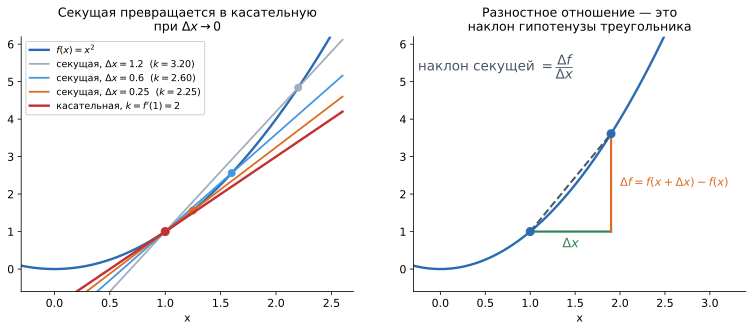
Слева: чем меньше $\Delta x$, тем ближе секущая (проходящая через две точки графика) к касательной. Наклоны секущих 3,20 $\to$ 2,60 $\to$ 2,25 сходятся к 2 — это и есть $f'(1)$ для $f(x)=x^2$. Справа: та же дробь как треугольник — $\Delta x$ по горизонтали, $\Delta f$ по вертикали, а разностное отношение $\Delta f / \Delta x$ есть наклон гипотенузы. Правая панель показывает, откуда берётся дробь: постройте прямоугольный треугольник с катетами $\Delta x$ и $\Delta f$ — отношение катетов и есть наклон гипотенузы, то есть секущей.
Левая панель показывает предельный переход: сдвигая вторую точку всё ближе к первой, секущая поворачивается и в пределе становится касательной. Производная $f'(x)$ — это наклон (угловой коэффициент) касательной в точке $x$.
Отсюда практическое чтение чисел: $f'(x) = 2$ означает «график здесь идёт вверх под таким наклоном, что на каждую единицу вправо приходится две единицы вверх».
Секущая через $x_0$ и $x_0+h$ — средняя скорость роста на отрезке. При $h \to 0$ второй конец подъезжает к $x_0$, секущая поворачивается к касательной, а её наклон $\frac{f(x_0+h)-f(x_0)}{h}$ стремится к $f'(x_0)$. Одну и ту же вещь пишут по-разному, и это сбивает с толку:
- $f'(x)$ — обозначение Лагранжа, самое короткое;
- $\frac{df}{dx}$ — обозначение Лейбница: подчёркивает, что это дробь «изменение $f$ на изменение $x$», и явно указывает, по какой переменной дифференцируем;
- $\dot{x}$ — обозначение Ньютона, встречается в физике для производной по времени.
В ML чаще нужен стиль Лейбница ($\frac{\partial L}{\partial w}$), потому что переменных много и надо указывать, по какой именно берём производную.
- $f'(x) > 0$ — функция возрастает: сдвинулись вправо, значение выросло.
- $f'(x) < 0$ — функция убывает.
- $f'(x) = 0$ — касательная горизонтальна: подозрение на экстремум либо на точку перегиба.
При этом важна не только сторона, но и величина: $f'(x) = 100$ означает очень крутой склон, $f'(x) = 0{,}01$ — почти плато. Именно это различие определяет, будет ли шаг градиентного спуска большим или крошечным.
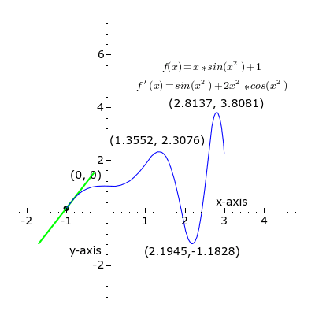
График функции (синим) и её производная, отображённая как прямая, скользящая по графику. Производная помечается зелёным на промежутках возрастания функции ($f'(x)>0$), красным на промежутках убывания ($f'(x) < 0$) и чёрным — в точках экстремума ($f'(x)=0$). Можно интерактивно поиграться с визуализацией производной здесь — потяните точку по графику и посмотрите, как меняется наклон касательной.
- Производная константы: $(c)' = 0$
- Вынесение константы: $(c\,u)' = c\,u'$
- Производная суммы: $(u + v)' = u' + v'$
- Производная произведения: $(uv)' = u'v + uv'$
- Производная частного: $\left(\frac{u}{v}\right)' = \frac{u'v - uv'}{v^2}$
- Производная степенной функции: $(x^n)' = n x^{n-1}$
- Правило цепочки: $\big(f(g(x))\big)' = f'(g(x)) \cdot g'(x)$
Их полезно не зубрить, а понимать:
- Константа даёт ноль, потому что константа не меняется: сдвинули вход — выход тот же, скорость изменения нулевая.
- Сумма разбивается на слагаемые, потому что вклады независимы: если один процесс добавляет 3 единицы в секунду, а другой 5, вместе они дают 8.
- Произведение не разбивается — и это ловушка. $(uv)' \ne u'v'$. Представьте прямоугольник со сторонами $u$ и $v$: при изменении сторон площадь прирастает двумя полосками — одна за счёт роста $u$ (её площадь $u' v$), другая за счёт роста $v$ (площадь $u v'$). Отсюда и два слагаемых.
- Правило цепочки — это перемножение «передаточных коэффициентов». Если шестерёнка $g$ крутится втрое быстрее входа, а $f$ — вдвое быстрее $g$, то на выходе получится в шесть раз быстрее входа.
$$f'(x) = (x^3)' + (5x^2)' = 3x^2 + 5 \cdot 2x = 3x^2 + 10x$$
Разберём по шагам: производная суммы = сумма производных; константа 5 выносится; для степенной функции показатель спускается множителем вниз, а сам показатель уменьшается на единицу.
Проверим смысл в точке $x = 1$: $f'(1) = 3 + 10 = 13$. Это значит, что рядом с $x=1$ функция растёт примерно на 13 единиц на каждую единицу по $x$. Убедимся приближённо: $f(1) = 6$, $f(1{,}01) = 6{,}130801$; отношение прироста $\frac{0{,}130801}{0{,}01} \approx 13{,}08$ — почти в точности предсказанное значение. Расхождение в сотые появляется потому, что $\Delta x$ хоть и мал, но не равен нулю: производная — это предел, а мы посчитали конечную разность.
- $(e^x)' = e^x$ — экспонента совпадает со своей производной, единственная такая функция (с точностью до множителя). Отсюда её вездесущность в формулах.
- $(\ln x)' = \frac{1}{x}$ — при $x$ близких к нулю производная огромна; это одна из причин численной нестабильности кросс-энтропии при уверенно неверных предсказаниях.
- $\sigma'(x) = \sigma(x)\big(1 - \sigma(x)\big)$ для сигмоиды $\sigma(x) = \frac{1}{1+e^{-x}}$.
Из формулы $\sigma'(x) = \sigma(x)(1-\sigma(x))$ видно неприятное: максимум достигается при $\sigma(x) = 0{,}5$ и равен $0{,}25$. То есть производная сигмоиды никогда не превышает 1/4, а на «хвостах» (при больших по модулю $x$) стремится к нулю.
Теперь вспомним правило цепочки: в глубокой сети производные слоёв перемножаются. Десять сигмоидных слоёв дают множитель не больше $0{,}25^{10} \approx 10^{-6}$ — градиент до первых слоёв фактически не доходит, и они не обучаются. Это и есть проблема затухающих градиентов.
Именно поэтому в современных сетях сигмоиду вытеснила ReLU: у неё производная равна 1 на всей положительной полуоси и ничего не затухает.
$f'(x) > 0$ говорит, что функция растёт, а вовсе не что она положительна. Функция может быть глубоко отрицательной и при этом расти: у $f(x) = x - 10$ в точке $x=0$ значение $-10$, а производная $+1$.
И симметрично: большое значение $f$ ничего не говорит о $f'$. Функция может стоять на огромной высоте и не меняться вовсе — тогда $f' = 0$.
Что такое производная функции $f(x)$ в точке $x$ и каков её геометрический смысл?
Производная — это предел $f'(x) = \lim_{\Delta x \to 0} \dfrac{f(x + \Delta x) - f(x)}{\Delta x}$, мгновенная скорость изменения функции. Геометрически — наклон касательной к графику в этой точке (предельное положение секущей при $\Delta x \to 0$).
Что показывает знак производной $f'(x)$ и что — её величина?
Знак: $f' > 0$ — функция возрастает, $f' < 0$ — убывает, $f' = 0$ — касательная горизонтальна (кандидат в экстремум). Величина показывает крутизну: $f' = 100$ — резкий склон, $f' = 0{,}01$ — почти плато.
Почему $(uv)' \ne u'v'$ и как выглядит правило произведения?
$(uv)' = u'v + uv'$. Наглядно: площадь прямоугольника со сторонами $u$ и $v$ прирастает двумя полосками — от роста $u$ и от роста $v$, отсюда два слагаемых.
Как найти производную $f(x) = x^3 + 5x^2$?
По правилам суммы, вынесения константы и степенной функции: $f'(x) = 3x^2 + 10x$.
Какое правило дифференцирования лежит в основе backpropagation?
Правило цепочки: $\big(f(g(x))\big)' = f'(g(x)) \cdot g'(x)$ — производные звеньев композиции перемножаются. Именно оно позволяет вычислять градиенты в нейросетях послойно, от выхода к входу.
Чему равна производная сигмоиды и как это связано с затухающими градиентами?
$\sigma'(x) = \sigma(x)(1-\sigma(x))$, максимум равен $0{,}25$ при $\sigma(x)=0{,}5$, на хвостах стремится к нулю. При перемножении по слоям (chain rule) множители $\le 0{,}25$ дают экспоненциальное затухание градиента, поэтому глубокие сети с сигмоидами плохо обучаются, и их заменили на ReLU.
Чему равны производные $e^x$ и $\ln x$ и почему они важны?
$(e^x)' = e^x$ — экспонента воспроизводит саму себя. $(\ln x)' = \frac1x$ — вблизи нуля производная неограниченно растёт, отсюда численная нестабильность кросс-энтропии при уверенно неверных предсказаниях.
-
Производные функций нескольких переменных (Частные производные)
В математическом анализе частная производная — одно из обобщений понятия производной на случай функции нескольких переменных. Частная производная — это предел отношения приращения функции по выбранной переменной к приращению этой переменной, при стремлении этого приращения к нулю:
$${\frac {\partial f(x_{1},\cdots ,x_{n})}{\partial \textcolor{red}{x_{k}}}}=\lim_{\textcolor{red}{\Delta x_k\to 0}} {\frac {f(x_{1},\ldots ,\textcolor{red}{x_{k}+\Delta x_k},\ldots ,x_{n})- f(x_{1},\ldots ,\textcolor{red}{x_{k}},\ldots ,x_{n})}{\textcolor{red}{\Delta x_k}}},$$
где приращение берётся по $k$-й компоненте $x_k$. Смотрим, с какой скоростью функция $f(x_{1},\dots ,x_{n})$ меняется в направлении координаты с номером $k$, когда все остальные переменные зафиксированы.
У функции одной переменной есть только два направления движения — влево и вправо, поэтому вопрос «как быстро меняется функция» имеет один ответ.
У функции многих переменных направлений бесконечно много, и вопрос без уточнения направления бессмысленен. Частная производная — самый простой способ его уточнить: двигаемся строго вдоль одной координатной оси, остальные держим неподвижными.
Житейская аналогия: цена квартиры зависит от площади, этажа и района. Вопрос «как влияет площадь?» подразумевает «при том же этаже и том же районе» — то есть именно частную производную. Экономисты называют это ceteris paribus, «при прочих равных», и это буквально одно и то же понятие.
Круглая «дэ» $\partial$ вместо прямой $d$ ставится специально: она напоминает, что переменных несколько и мы фиксируем все, кроме одной. Читается как «дэ» или «частная дэ».
Запись $\frac{\partial f}{\partial x}$ означает «частная производная $f$ по $x$» — то есть «остальные переменные считаем константами».
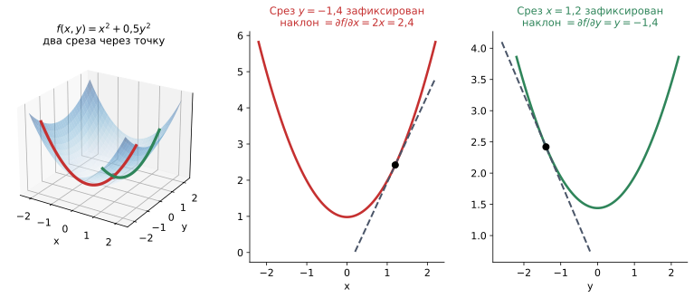
Слева: поверхность $f(x,y)=x^2+0{,}5y^2$ и два среза через выбранную точку — красный получен фиксацией $y=-1{,}4$, зелёный фиксацией $x=1{,}2$. В центре и справа: те же срезы, развёрнутые в обычные плоские графики. Каждый срез — функция одной переменной, и её наклон в точке (пунктир) и есть соответствующая частная производная: $\partial f/\partial x = 2{,}4$ и $\partial f/\partial y = -1{,}4$. Зафиксировать $y$ — значит разрезать поверхность вертикальной плоскостью. В сечении получается обычная кривая, то есть функция одной переменной, а к ней применимо всё из предыдущего вопроса.
Отсюда практическое правило вычисления: когда считаем частную производную по $x_k$, все остальные переменные считаем константами и дифференцируем как обычно.
Обратите внимание на знаки в примере: по $x$ производная положительна (в этой точке склон идёт вверх), по $y$ — отрицательна (склон идёт вниз). Одна и та же точка, разные направления — разные ответы. Это и есть причина, по которой одного числа для описания «скорости» функции многих переменных не хватает.
- $\dfrac{\partial f}{\partial x} = 2xy$ — здесь $y$ ведёт себя как число: производная $x^2 y$ по $x$ равна $y \cdot 2x$, а слагаемое $3y$ вообще не зависит от $x$ и даёт ноль.
- $\dfrac{\partial f}{\partial y} = x^2 + 3$ — теперь константа уже $x$: производная $x^2 y$ по $y$ равна $x^2$, а $3y$ даёт 3.
Подставим точку $(2, 1)$: $\frac{\partial f}{\partial x} = 4$, $\frac{\partial f}{\partial y} = 7$. Читается так: рядом с этой точкой единичный сдвиг по $x$ прибавляет к функции около 4, а по $y$ — около 7. По $y$ функция чувствительнее.
Частные производные используются для анализа функций многих переменных, оптимизации и вычисления градиентов в машинном обучении — в частности, в методе обратного распространения ошибки (backpropagation).
В нейросети параметров миллионы, и для каждого нужна «своя» частная производная функции потерь: $\frac{\partial L}{\partial w_{ij}}$ — насколько изменится ошибка, если пошевелить именно этот вес, оставив все остальные на месте.
Собранные вместе, эти производные образуют градиент — вектор, который показывает, как надо изменить каждый параметр, чтобы ошибка уменьшилась. Обучение и есть многократное «посчитали все частные производные — сдвинули все параметры чуть-чуть в нужную сторону».
Считать их по определению, то есть отдельным пределом на каждый параметр, невозможно физически: это миллионы прогонов сети. Backpropagation считает их все за один обратный проход, переиспользуя промежуточные результаты, — и именно поэтому глубокое обучение вообще осуществимо.
Если $f(x,y,z)=(x^5, y^3, z)$, то
$$ \left \lbrace \begin{aligned} & \dfrac {\partial f(x,y,z)}{\partial x}=(5x^4,0,0)\\ & \dfrac {\partial f(x,y,z)}{\partial y}=(0,3y^2,0)\\ & \dfrac {\partial f(x,y,z)}{\partial z}=(0,0,1)\\ & \dfrac {\partial^2 f(x,y,z)}{\partial x^2}=(20x^3,0,0) \end{aligned} \right. $$
Здесь каждая компонента выхода зависит ровно от одной входной переменной, поэтому в каждом ответе ненулевая только одна позиция: координаты не смешиваются.
Если $f(x,y,z)=(y^2x^5, xy^3, xyz)$, то
$$ \left \lbrace \begin{aligned} & \dfrac {\partial f(x,y,z)}{\partial x}=(5x^4y^2,y^3,yz)\\ & \dfrac {\partial f(x,y,z)}{\partial y}=(2yx^5,3y^2x,xz)\\ & \dfrac {\partial f(x,y,z)}{\partial z}=(0,0,xy)\\ & \dfrac {\partial^2 f(x,y,z)}{\partial x^2}=(20x^3y^2,0,0)\\ & \dfrac {\partial^2 f(x,y,z)}{\partial x \partial y}=(10yx^4,3y^2,z)\\ & \dfrac {\partial^3 f(x,y,z)}{\partial x \partial y \partial z}=(0,0,1) \end{aligned} \right. $$
Теперь в ответах остаются обе переменные: например, скорость изменения по $x$ сама зависит от того, каково текущее $y$.
Запись $\frac{\partial^2 f}{\partial x \partial y}$ — это «продифференцировали по $y$, потом результат ещё раз по $x$». Смысл: как скорость изменения по одной переменной зависит от другой.
Если $\frac{\partial^2 f}{\partial x \partial y} = 0$, переменные влияют независимо — эффект от $x$ одинаков при любом $y$. Если не ноль, есть взаимодействие: полезность увеличения $x$ зависит от текущего уровня $y$.
Это в точности то, что в ML называют feature interaction. Линейная модель $w_1x_1 + w_2x_2$ имеет нулевую смешанную производную и потому взаимодействий не улавливает в принципе; добавление признака-произведения $x_1x_2$ или переход к дереву/бустингу — способы это исправить.
Полезный факт (теорема Шварца): у достаточно гладких функций порядок дифференцирования не важен: $\frac{\partial^2 f}{\partial x \partial y} = \frac{\partial^2 f}{\partial y \partial x}$. Именно поэтому гессиан, о котором ниже, оказывается симметричной матрицей.
Якобиан — матрица всех первых частных производных отображения $f:\mathbb{R}^n \to \mathbb{R}^m$. Если $f(\mathbb{x})=(f_1,\ldots,f_m)$ и $\mathbb{x}=(x_1,\ldots,x_n)$, то
$$ J_f(\mathbb{x})= \begin{pmatrix} \dfrac{\partial f_1}{\partial x_1} & \cdots & \dfrac{\partial f_1}{\partial x_n}\\ \vdots & \ddots & \vdots\\ \dfrac{\partial f_m}{\partial x_1} & \cdots & \dfrac{\partial f_m}{\partial x_n} \end{pmatrix}. $$
$i$-я строка — градиент $\nabla f_i$; $j$-й столбец — как меняется весь вектор $f$ при малом изменении только $x_j$ (остальные переменные фиксированы).
Когда и вход, и выход — векторы, одного числа для описания «производной» не хватает: нужно знать, как каждый выход реагирует на каждый вход. Всех таких пар ровно $m \times n$ — отсюда и матрица.
Смысл якобиана прежний: это лучшее линейное приближение отображения вблизи точки. У функции одной переменной такое приближение — касательная прямая с коэффициентом $f'(x)$; здесь — линейное отображение с матрицей $J_f$, и работает та же формула:
$$f(\mathbf{x} + \Delta\mathbf{x}) \approx f(\mathbf{x}) + J_f(\mathbf{x})\,\Delta\mathbf{x}$$
В ML якобиан — это то, чем оперирует backpropagation: каждый слой сети есть отображение $\mathbb{R}^n \to \mathbb{R}^m$, и обратный проход перемножает якобианы слоёв по правилу цепочки. (Фактически их не строят целиком — это была бы огромная матрица; вычисляют сразу произведение вектора на якобиан, что дешевле и по памяти, и по времени.)
Для $f(x,y,z)=(y^2x^5,\, xy^3,\, xyz)$ частные производные уже посчитаны выше — остаётся разложить их по столбцам:
$$ J_f(x,y,z)= \begin{pmatrix} 5x^4y^2 & 2yx^5 & 0\\ y^3 & 3y^2x & 0\\ yz & xz & xy \end{pmatrix}. $$
Читать так: элемент в строке $i$, столбце $j$ — это $\frac{\partial f_i}{\partial x_j}$. Например, нули в правом верхнем углу означают, что первые две компоненты выхода вообще не зависят от $z$.
В первом примере $f(x,y,z)=(x^5,y^3,z)$ якобиан диагональный: $\mathrm{diag}(5x^4,\,3y^2,\,1)$ — координаты не смешиваются:
$$ J_f(x,y,z)= \begin{pmatrix} 5x^4 & 0 & 0\\ 0 & 3y^2 & 0\\ 0 & 0 & 1 \end{pmatrix}. $$
Диагональность — очень удобное свойство: такое преобразование действует на каждую координату независимо, и его легко и обращать, и хранить. Ровно поэтому поэлементные активации (ReLU, сигмоида) дёшевы в backpropagation: их якобиан диагонален, и умножение на него — это просто поэлементное умножение вектора, без всякой матричной арифметики.
Гессиан — матрица вторых частных производных скалярной функции $f:\mathbb{R}^n \to \mathbb{R}$:
$$ H_f(\mathbb{x})= \begin{pmatrix} \dfrac{\partial^2 f}{\partial x_1^2} & \cdots & \dfrac{\partial^2 f}{\partial x_1 \partial x_n}\\ \vdots & \ddots & \vdots\\ \dfrac{\partial^2 f}{\partial x_n \partial x_1} & \cdots & \dfrac{\partial^2 f}{\partial x_n^2} \end{pmatrix}. $$
Гессиан описывает кривизну функции. По теореме Шварца он симметричен.
Первая производная говорит, куда наклонён склон. Вторая — как быстро меняется сам наклон, то есть насколько поверхность выгнута.
Разница видна на простом сравнении: у узкого крутого оврага и у широкой пологой чаши в какой-то точке наклон может быть одинаковым, но шагать по ним надо совершенно по-разному. В овраге большой шаг перелетит через дно и окажется на противоположном склоне; в пологой чаше маленький шаг — это просто потеря времени.
Градиент про это не знает ничего — он видит только наклон в точке. Гессиан видит форму и потому позволяет подобрать правильную длину шага.
Это прямое обобщение школьного правила «$f'' > 0$ — минимум, $f'' < 0$ — максимум». В многомерном случае вместо знака числа смотрят на собственные значения гессиана в критической точке (где градиент равен нулю):
- все собственные значения положительны — по всем направлениям функция выгнута вверх, это локальный минимум;
- все отрицательны — локальный максимум;
- есть и те, и другие — седловая точка: по одним направлениям вниз, по другим вверх.
Смысл прежний: собственные значения — это кривизна вдоль «главных» направлений поверхности.
Для модели с $n$ параметрами гессиан — матрица $n \times n$. При $n = 10^6$ это $10^{12}$ чисел, то есть терабайты памяти только на хранение. Явно строить его невозможно, но идея кривизны используется постоянно, просто в обходных формах:
- Оптимизация второго порядка (метод Ньютона, quasi-Newton, L-BFGS): шаг учитывает кривизну, а не только наклон. Быстрее сходится вблизи минимума, но дороже по памяти и вычислениям — в глубоком обучении применяется редко.
- Gauss–Newton: гессиан приближают через $J^\top J$ (якобиан остатков), избегая вторых производных.
- Adam и другие адаптивные методы: копят скользящие средние квадратов градиентов и делят на них шаг. Это неявная диагональная оценка кривизны — и именно поэтому Adam хорошо справляется с оврагами, где обычный SGD буксует.
Отдельный сюжет — анализ ландшафта потерь. Плоские минимумы (все собственные значения гессиана малы) эмпирически связывают с лучшей обобщающей способностью: небольшое смещение параметров или сдвиг распределения данных почти не меняют качество.
Острые минимумы (большие собственные значения) уязвимы: та же величина возмущения выбивает модель из хорошего решения. На этой идее построен, например, оптимизатор SAM (Sharpness-Aware Minimization), который целенаправленно ищет плоские минимумы.
Также известно, что в глубоких сетях типичная проблема — не локальные минимумы, а седловые точки: в пространстве огромной размерности вероятность, что все собственные значения окажутся одного знака, ничтожно мала.
- Якобиан — первые производные вектор-функции $\mathbb{R}^n \to \mathbb{R}^m$, матрица $m \times n$.
- Гессиан — вторые производные скалярной функции $\mathbb{R}^n \to \mathbb{R}$, матрица $n \times n$, симметричная.
Связь между ними такая: гессиан скалярной функции $f$ — это якобиан её градиента, $H_f = J_{\nabla f}$.
Для вектор-функции $f:\mathbb{R}^n \to \mathbb{R}^m$ единого гессиана не существует — есть набор гессианов по каждой координате $f_i$ либо трёхмерный тензор вторых производных.
Частная производная описывает движение строго вдоль координатной оси. Если пойти под углом $45°$, скорость изменения будет другой, и она не равна ни одной из частных производных.
Для произвольного направления $\mathbf{u}$ (единичного вектора) считают производную по направлению: $D_\mathbf{u} f = \nabla f \cdot \mathbf{u}$ — скалярное произведение градиента на направление. Частные производные — просто её частный случай для $\mathbf{u}$, совпадающего с координатной осью.
Что такое частная производная функции $f(x_1, \ldots, x_n)$ по переменной $x_k$?
Предел $\dfrac{\partial f}{\partial x_k} = \lim_{\Delta x_k \to 0} \dfrac{f(\ldots, x_k + \Delta x_k, \ldots) - f(\ldots, x_k, \ldots)}{\Delta x_k}$ — скорость изменения функции вдоль $k$-й координаты при зафиксированных остальных («при прочих равных»).
Какова ключевая идея вычисления частной производной?
Фиксируем все переменные, кроме одной, и дифференцируем по ней как по обычной функции одной переменной. Геометрически это срез поверхности плоскостью — в сечении получается обычная кривая, и частная производная есть наклон её касательной.
Как частные производные используются в машинном обучении?
Для каждого параметра вычисляется $\frac{\partial L}{\partial w}$ — насколько изменится ошибка при изменении именно этого веса. Совокупность этих производных образует градиент $\nabla L$; backpropagation вычисляет их все за один обратный проход.
Что означает $\dfrac{\partial^2 f}{\partial x \partial y}$ и как это связано с признаками в ML?
Смешанная вторая производная: как скорость изменения по $x$ зависит от $y$. Ненулевое значение означает взаимодействие переменных (feature interaction); у линейной модели оно равно нулю, поэтому взаимодействия она не улавливает. По теореме Шварца для гладких функций порядок дифференцирования не важен.
Что такое якобиан и какой у него смысл?
Матрица всех первых частных производных отображения $f:\mathbb{R}^n \to \mathbb{R}^m$ размера $m \times n$; строка $i$ — градиент $\nabla f_i$, столбец $j$ — реакция всего выхода на изменение $x_j$. Смысл — лучшее линейное приближение отображения вблизи точки: $f(\mathbf{x}+\Delta\mathbf{x}) \approx f(\mathbf{x}) + J_f\Delta\mathbf{x}$.
Что такое гессиан и чем он отличается от якобиана?
Гессиан — симметричная матрица $n \times n$ вторых производных скалярной функции, описывает кривизну. Якобиан — матрица $m \times n$ первых производных вектор-функции. Связь: $H_f = J_{\nabla f}$.
Как по гессиану определить тип критической точки?
По знакам собственных значений: все положительны — локальный минимум, все отрицательны — максимум, есть разных знаков — седловая точка. Это обобщение правила «$f'' > 0$ — минимум».
Почему в глубоком обучении гессиан почти никогда не вычисляют явно, и что используют вместо него?
При миллионах параметров матрица $n \times n$ не помещается в память. Вместо этого применяют приближения: Gauss–Newton ($J^\top J$), quasi-Newton (L-BFGS) и адаптивные методы вроде Adam, которые неявно оценивают диагональ кривизны через скользящие средние квадратов градиентов.
-
Аппроксимация функции
Аппроксимация функции — это замена, приближение рассматриваемой функции другой функцией, которая близка к исходной и достаточно хорошо описывает её поведение.
Простыми словами: настоящая функция неудобна — слишком сложная, слишком дорогая в вычислении или вообще неизвестна. Поэтому её подменяют более простой, которая ведёт себя почти так же там, где нам это нужно.
Слово «близка» надо превратить в число, иначе спорить не о чем. Обычно берут одну из мер расхождения:
- максимальное отклонение на отрезке: $\max_x |f(x) - g(x)|$ — «худший случай не хуже, чем…»;
- средняя квадратичная ошибка: $\int (f - g)^2 dx$ или $\frac1N\sum (f(x_i) - g(x_i))^2$ на выборке точек.
Второй вариант — это буквально MSE, знакомая по регрессии. Обучение модели и есть подбор аппроксимации по критерию средней квадратичной близости.
А аппроксимировать приходится, когда функция:
- слишком сложна для вычисления (особенно её производные);
- неизвестна вовсе — как истинная зависимость «фотография $\to$ что на ней изображено».
Идеальной аппроксимации не бывает: чем ближе приближение к оригиналу, тем оно обычно сложнее и дороже. Хорошее приближение — то, где на конкретной задаче достигнут разумный баланс.
Здесь же прячется важная оговорка: приближение верно только там, где его строили. Многочлен Тейлора для $\sin x$, оборванный на нескольких слагаемых, отлично работает при малых $x$ и катастрофически врёт уже при $x = 20$ — хотя полный, бесконечный ряд сходится к синусу при любом $x$. Ровно так же модель, обученная на данных одного распределения, теряет смысл на данных другого — это и есть data drift, только сказанное на языке анализа.
Идея: приблизить функцию многочленом, подобрав его так, чтобы в выбранной точке совпали значение, первая производная, вторая и так далее. Чем больше производных совпало, тем дольше многочлен «держится рядом» с оригиналом.
Например, $f(x) = \sin(x)$ около нуля:
$$\sin(x) \approx x - \frac{x^3}{3!} + \frac{x^5}{5!} - \frac{x^7}{7!} + \cdots$$
Этот ряд в пределе сходится к $\sin(x)$.
Многочлены Тейлора $T_1, T_3, \dots, T_{11}$ для $\sin x$: каждый следующий добавляет одно слагаемое и совпадает с функцией на всё более широком отрезке вокруг нуля. Вдали от нуля любой конечный многочлен всё равно уходит на бесконечность. Если оборвать ряд на первом слагаемом, получится
$$f(x + \Delta x) \approx f(x) + f'(x)\,\Delta x$$
то есть замена функции её касательной.
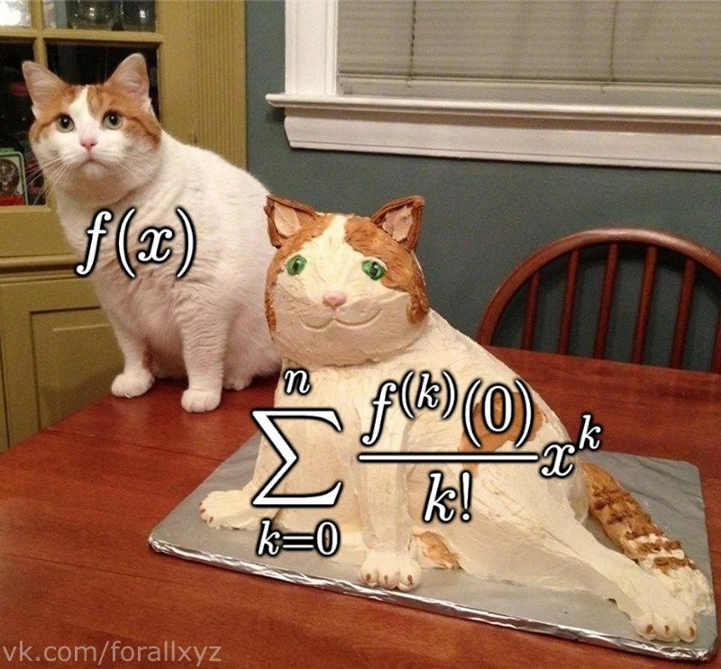
Шуточная, но точная иллюстрация того же принципа: чем больше членов ряда, тем ближе приближение к оригиналу — и тем дороже вычисление. Другая идея: приближать не многочленами, а суммой синусов и косинусов разных частот:
$$f(x) = \frac{a_0}{2} + \sum_{n=1}^{\infty} (a_n \cos(nx) + b_n \sin(nx))$$
где $a_0, a_n, b_n$ — коэффициенты Фурье; каждый показывает, «сколько» волны данной частоты содержится в сигнале.
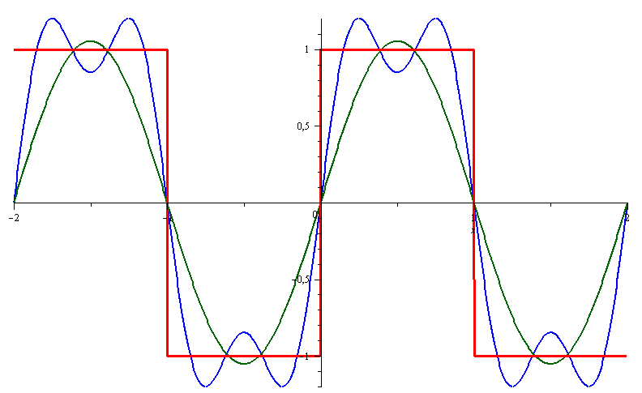
Сумма нескольких синусоид разных частот и амплитуд постепенно воспроизводит сложную периодическую форму. Каждое добавленное слагаемое — ещё одна частота в разложении. Разница не в качестве, а в типе задачи:
- Тейлор идеален локально: очень точен около выбранной точки и быстро портится вдали от неё.
- Фурье работает глобально на всём периоде и отлично ловит повторяющиеся структуры, но плохо описывает резкие одиночные скачки (около них возникают характерные «звоны» — эффект Гиббса).
Отсюда и области применения: Тейлор — там, где нужны локальные приближения и производные (оптимизация), Фурье — там, где есть периодичность и частоты (обработка сигналов, аудио, сжатие изображений в JPEG, позиционные кодировки в трансформерах).
Все приведённые выше примеры работают через математический аппарат рядов Тейлора и Фурье. Знать сами ряды — и что такое ряды вообще — для дальнейшего материала не требуется; они приведены как наглядные примеры аппроксимации.
Важно унести из них одну мысль: аппроксимация — это всегда подбор коэффициентов у заранее выбранного семейства простых функций. У Тейлора семейство — многочлены, у Фурье — синусоиды, у нейросети — композиции линейных слоёв с нелинейностями. Отличается семейство, принцип один.
Нас интересует аппроксимация функций, которую выполняют нейросети. Нейронная сеть — это универсальный аппроксиматор: она может приблизить любую непрерывную функцию с любой наперёд заданной точностью.
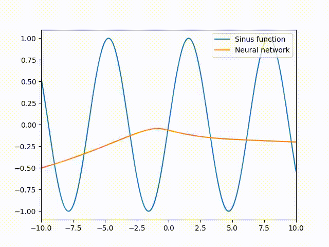
В процессе обучения сеть подгоняет свою кривую к целевой функции — это и есть подбор коэффициентов (весов) внутри выбранного семейства функций. 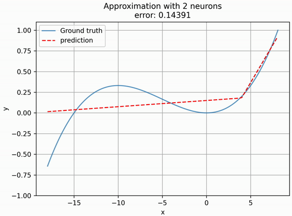
Чем больше нейронов, тем больше «изломов» может иметь итоговая кривая и тем точнее приближение — но тем выше и риск подогнаться под шум вместо закономерности. На это указывает теорема об универсальной аппроксимации, доказанная Джорджем Цыбенко для сигмоидных активаций в 1989 году.
Формулировка примерно такая: сеть с одним скрытым слоем и достаточным числом нейронов способна приблизить любую непрерывную функцию на ограниченной области с любой точностью $\varepsilon$.
Эту теорему цитируют чаще всего и понимают неправильнее всего. Она гарантирует существование подходящих весов — и ничего больше. В частности, она не говорит:
- сколько нейронов понадобится. «Достаточное число» может означать экспоненциально много — настолько, что практической пользы никакой;
- что эти веса удастся найти. Существование решения и способность градиентного спуска до него добраться — разные утверждения;
- что сеть будет обобщать. Приближение гарантировано на той области, где строилось; за её пределами не обещано ничего.
Практический вывод: теорема объясняет, почему глубокое обучение вообще не безнадёжно, но не объясняет, почему оно работает хорошо. Ответ на второй вопрос — про архитектуры, регуляризацию и оптимизацию, а не про эту теорему.
Раз обучение есть аппроксимация, то и переобучение формулируется в её терминах: модель приблизила не ту функцию, которую надо.
Данные — это значения истинной зависимости плюс шум. Слишком гибкое семейство (много нейронов, глубокое дерево) приблизит выборку идеально — вместе с шумом, который к истинной зависимости отношения не имеет. На обучении ошибка нулевая, на новых данных — большая.
Отсюда и логика лечения: сузить семейство функций, из которых выбираем (регуляризация, меньше параметров, dropout), либо остановить подгонку раньше (early stopping). Всё это способы не дать аппроксимации стать «слишком точной» на неправильном критерии.
Что такое аппроксимация функции и зачем она нужна?
Замена исходной функции другой, более простой, которая близка к ней и хорошо описывает её поведение. Нужна, когда исходная функция слишком сложна для вычисления или вовсе неизвестна (как истинная зависимость «объект $\to$ ответ» в ML).
Что значит «функции близки» формально?
Задаётся мерой расхождения: максимальным отклонением $\max_x|f(x)-g(x)|$ либо средней квадратичной ошибкой $\frac1N\sum(f(x_i)-g(x_i))^2$. Второй вариант — это и есть MSE из регрессии.
Что такое приближение Тейлора первого порядка и где оно используется в ML?
$f(x+\Delta x) \approx f(x) + f'(x)\Delta x$ — замена функции касательной. На нём построен градиентный спуск; из ограниченности области, где приближение верно, следует необходимость небольшого learning rate.
Чем разложение Фурье отличается от разложения Тейлора?
Тейлор точен локально, около выбранной точки, и портится вдали от неё. Фурье работает глобально на периоде, хорошо ловит повторяющиеся структуры, но плохо описывает резкие скачки (эффект Гиббса). Отсюда разные области применения: оптимизация против обработки сигналов.
Что утверждает теорема об универсальной аппроксимации и чего она НЕ утверждает?
Сеть с одним скрытым слоем и достаточным числом нейронов может приблизить любую непрерывную функцию на ограниченной области с любой точностью. Она не говорит, сколько нейронов нужно, что нужные веса удастся найти обучением и что модель будет обобщать за пределами области обучения.
Почему обучение модели — это задача аппроксимации, и как через неё объясняется переобучение?
Истинная зависимость неизвестна, и модель подбирает коэффициенты внутри выбранного семейства функций так, чтобы приблизить её по обучающим данным. Переобучение — это приближение не той функции: слишком гибкое семейство подгоняется под шум, который к истинной зависимости не относится. Лечится сужением семейства (регуляризация) или ранней остановкой.
-
Гладкость функции
Обычно под гладкой функцией понимают функцию $f(x)$, которая имеет непрерывную первую производную $f'(x)$. Это обозначают так: $f(x) \in C^1(\mathbb{R})$ — функция $f(x)$ непрерывна и имеет непрерывную первую производную на всём множестве $\mathbb{R}$.
Если совсем простыми словами: у графика гладкой функции нет ни разрывов, ни углов. Наклон меняется плавно — касательная, скользя по кривой, поворачивается постепенно, а не подпрыгивает.
- Функция $f(x)$ непрерывна — нет разрывов.
- У неё есть производная $f'(x)$ в каждой точке.
- Эта производная сама непрерывна — наклон не меняется скачком.
Третий пункт — самый неочевидный, и именно он отличает «гладкую» от просто «дифференцируемой». Бывают функции, у которых производная существует везде, но прыгает; они формально дифференцируемы, но негладкие.
Обозначение обобщается: $C^0$ — просто непрерывные, $C^1$ — с непрерывной первой производной, $C^2$ — со второй, $C^\infty$ — с производными всех порядков (например, $e^x$, $\sin x$, любой многочлен).
Три уровня «плохости» функции удобно держать в голове так:
- Разрыв — кривую нельзя нарисовать не отрывая руки. Нет непрерывности.
- Угол (излом) — нарисовать можно, но в одной точке приходится резко изменить направление. Непрерывность есть, гладкости нет.
- Гладко — рука движется плавно, без рывков.
Практический тест: мысленно проведите касательную и покатите её вдоль графика. Если в какой-то точке она мгновенно разворачивается — там излом.
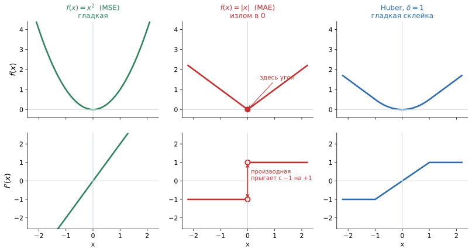
Верхний ряд — сами функции, нижний — их производные. У $x^2$ производная $2x$ непрерывна: функция гладкая. У $|x|$ в нуле угол, и производная прыгает с $-1$ на $+1$ — разрыв, гладкости нет. Huber склеивает параболу в центре с прямыми на краях так, что производная остаётся непрерывной: та же устойчивость к выбросам, что у MAE, но без излома. Нижний ряд — самое важное на картинке. Гладкость определяется не по виду самой функции, а по виду её производной.
- $x^2$: производная — наклонная прямая, никаких разрывов. Гладкая.
- $|x|$: производная — ступенька, которая в нуле прыгает с $-1$ на $+1$. Функция непрерывна (угол на верхнем графике, а не обрыв), но её производная разрывна — значит, негладкая.
- Huber: производная растёт линейно в центре и выходит на постоянные значения по краям, без прыжков — как раз то, что нужно.
Обратите внимание на изломы в производной Huber при $x = \pm\delta$: сама производная непрерывна, но её наклон меняется скачком. То есть Huber принадлежит $C^1$, но не $C^2$. Для градиентных методов первого порядка этого достаточно.
Её производная $f'(x) = 2x$ — прямая, определена всюду и непрерывна. Никаких особых точек нет.
То же верно для любого многочлена: производная многочлена — снова многочлен, а многочлены непрерывны везде. Поэтому все полиномиальные функции автоматически гладкие.
Функция $f(x) = |x|$ непрерывна везде, но не является гладкой в точке $x = 0$: её производная там не определена. Слева от нуля $f'(x) = -1$, справа $f'(x) = +1$ — односторонние производные существуют, но не совпадают, а значит, производной в точке нет.
Проверить это можно прямо по определению: разностное отношение $\frac{|0+\Delta x| - 0}{\Delta x} = \frac{|\Delta x|}{\Delta x}$ равно $+1$ при $\Delta x > 0$ и $-1$ при $\Delta x < 0$. Предел при $\Delta x \to 0$ не существует.
Если функция не гладкая, её производные могут быть разрывными или не существовать в отдельных точках. Для методов оптимизации это означает, что в этих точках непонятно, куда шагать: градиент либо не определён, либо меняется скачком, и шаг становится нестабильным.
Отсюда общее правило: функцию потерь стараются выбирать хотя бы из класса $C^1$. Это не жёсткий запрет (см. ReLU ниже), но осознанное умолчание.
Функция потерь MSE (Mean Squared Error):
$$L(\hat{y}, y) = \frac{1}{N} \sum_{i=1}^N (y_i - \hat{y}_i)^2$$
где $N$ — количество объектов в выборке. Это сумма квадратичных функций, то есть многочлен второй степени по $\hat y$ — а значит, гладкая. Её производная
$$\frac{\partial L}{\partial \hat y_i} = -\frac{2}{N}(y_i - \hat y_i)$$
непрерывна и имеет прозрачный смысл: градиент пропорционален величине ошибки. Ошибся сильно — получил сильный сигнал к исправлению; ошибся чуть-чуть — сигнал слабый и шаг маленький. Это свойство удобно: около минимума обучение само собой замедляется.
Из той же формулы следует и недостаток. Ошибка в 100 единиц даёт градиент в 100 раз больше, чем ошибка в единицу, а вклад в саму функцию потерь — в 10 000 раз больше.
Значит, один аномальный объект (опечатка в данных, битая метка) способен перетянуть на себя всё обучение: модель будет подстраиваться под него в ущерб остальным. Именно от этой проблемы лечит MAE — и приносит взамен свою.
MAE (Mean Absolute Error) построена на $|y - \hat y|$ и потому имеет излом в нуле. Её производная — константа $\pm 1$ независимо от величины ошибки. Плюс: выброс не получает непропорционального веса, метрика устойчива. Минус: у нуля производная не определена, а вблизи минимума градиент не уменьшается — модель «дёргается» вокруг оптимума вместо плавного схождения.
Huber loss — компромисс: парабола при малых ошибках, прямая при больших:
$$L_\delta(a) = \begin{cases} \frac{1}{2}a^2, & |a| \le \delta \\ \delta\left(|a| - \frac{1}{2}\delta\right), & |a| > \delta \end{cases}$$
где $a = y - \hat y$. Коэффициенты подобраны так, что в точках $a = \pm\delta$ склейка идёт без излома: значения и производные обеих ветвей совпадают. Итог: устойчивость MAE к выбросам плюс гладкость MSE около минимума. Параметр $\delta$ задаёт, начиная с какой величины ошибка считается «выбросом»; типичные значения подбирают по масштабу целевой переменной.
Здесь новичка ждёт кажущееся противоречие. Мы только что объяснили, почему негладкость вредна, — а самая популярная функция активации $\mathrm{ReLU}(x) = \max(0, x)$ имеет ровно такой же излом в нуле, как $|x|$.
Объяснение в трёх пунктах:
- Проблемная точка ровно одна, и вероятность попасть в неё точно равна нулю для вещественных чисел; в реализациях производную в нуле просто доопределяют (PyTorch возвращает 0) — это называется субградиентом.
- Выигрыш перевешивает: на положительной полуоси производная ReLU равна 1, поэтому градиент не затухает при перемножении по слоям — в отличие от гладкой сигмоиды с её максимумом $0{,}25$.
- Требование гладкости строже всего к функции потерь, а не к промежуточным активациям: у лосса излом влияет на поведение вблизи оптимума, где модель и проводит основное время.
Вывод: гладкость — не догма, а инженерный критерий. Её нарушают осознанно, когда взамен получают что-то более ценное.
Что означает, что функция является гладкой ($f \in C^1(\mathbb{R})$)?
Функция непрерывна, имеет производную в каждой точке, и эта производная сама непрерывна. Наглядно: у графика нет ни разрывов, ни углов — наклон меняется плавно.
Чем гладкость отличается от непрерывности? Приведите пример.
Непрерывность запрещает только разрывы, гладкость — ещё и изломы. $f(x) = |x|$ непрерывна везде, но не гладкая в нуле: слева производная $-1$, справа $+1$, они не совпадают, поэтому производной в точке нет.
Почему функция потерь MAE менее удобна для обучения нейросетей, чем MSE?
MAE основана на $|y-\hat y|$ и негладка в нуле — там нет производной. Кроме того, её градиент равен $\pm1$ независимо от величины ошибки, поэтому вблизи оптимума модель не замедляется и колеблется. MSE гладкая, и её градиент пропорционален ошибке.
В чём обратная сторона MSE?
Квадрат делает вклад больших ошибок непропорционально большим: промах в 100 единиц весит в 10 000 раз больше промаха в единицу. Один выброс или битая метка способны перетянуть на себя обучение.
Что такое Huber loss и почему он гладкий?
Функция потерь, равная $\frac12 a^2$ при $|a| \le \delta$ и $\delta(|a| - \frac12\delta)$ при $|a| > \delta$. Коэффициенты подобраны так, что в точках склейки совпадают и значения, и производные, поэтому излома нет: получаем устойчивость MAE к выбросам и гладкость MSE около минимума.
ReLU не гладкая в нуле — почему её всё равно используют?
Проблемная точка одна, вероятность попасть в неё нулевая, а в реализациях производную там доопределяют (субградиент). Взамен ReLU даёт производную, равную 1 на положительной полуоси, что предотвращает затухание градиента при перемножении по слоям. Требование гладкости критичнее для функции потерь, чем для активаций.
-
Экстремум функции
Экстремум — максимальное или минимальное значение функции на заданном множестве. Точка, в которой достигается экстремум, называется точкой экстремума: если достигается минимум — точкой минимума, если максимум — точкой максимума.
Простыми словами: экстремум — это «дно ямы» или «вершина холма» на графике функции.
Это разные вещи, и на собеседовании за неточность цепляются.
Точка экстремума $x_0$ — это то, где (аргумент). Значение экстремума $f(x_0)$ — то, сколько (значение функции). Для $f(x) = (x-3)^2$ точка минимума равна 3, а значение минимума — 0.
В ML нужны обычно именно точки:
argmin(какие веса дают наименьшую ошибку) важнее, чемmin(чему равна эта ошибка).- Локальный экстремум — значение, которое является максимумом или минимумом лишь в некоторой окрестности точки, но не обязательно на всей области определения. Если в точке $x_0$ значение функции больше, чем во всех близких точках, — это локальный максимум; если меньше — локальный минимум.
- Глобальный (абсолютный) экстремум — максимум или минимум на всей области определения.
Наглядно: локальный минимум — дно любой ямы, из которой видно только её склоны. Глобальный минимум — самая глубокая яма во всём ландшафте.
Локальность — это вопрос обзора. Стоя на дне маленькой ямы, вы видите только подъёмы вокруг: любое движение делает хуже, значит, вы в минимуме. Но узнать, что за ближайшим гребнем есть яма вдвое глубже, невозможно, не выбравшись из текущей.
Ровно в таком положении находится градиентный спуск: он смотрит только на наклон под ногами и потому по построению умеет находить лишь локальные минимумы. Отличить локальный минимум от глобального, глядя лишь на окрестность, нельзя в принципе — это не недостаток алгоритма, а свойство задачи.
Любой глобальный экстремум является локальным; обратное неверно.
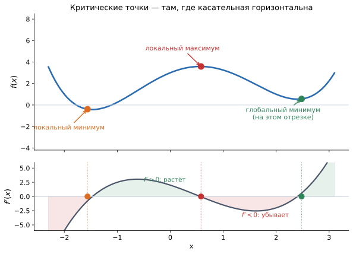
Сверху — функция, снизу — её производная. В трёх точках касательная горизонтальна и $f'(x)=0$: это критические точки. Зелёные участки внизу — там $f' > 0$ и функция растёт; красные — $f' < 0$, функция убывает. Смена знака с минуса на плюс даёт минимум, с плюса на минус — максимум. Обратите внимание: левая яма мельче правой, поэтому она лишь локальный минимум. Связь двух панелей — самое полезное, что стоит унести из вопроса:
- нули нижнего графика = горизонтальные касательные на верхнем = кандидаты в экстремумы;
- знак нижнего графика = направление движения верхнего: выше нуля — подъём, ниже — спуск;
- смена знака в нуле и определяет тип точки: с $-$ на $+$ — прошли дно (минимум), с $+$ на $-$ — прошли вершину (максимум).
Ещё одно наблюдение: обе ямы на верхнем графике — минимумы, но у правой значение функции меньше. Локальность определяется поведением рядом с точкой, глобальность — сравнением со всеми значениями сразу.
Точка бежит по графику $f(x)=x^3/3-x$, справа обновляются $f'$ и $f''$. В максимуме и минимуме $f'=0$, а знак $f''$ различает их: отрицательная вторая производная — максимум, положительная — минимум. В нуле $f''=0$ и меняет знак — это перегиб, не экстремум. - Взять производную $f'(x)$ и приравнять к нулю: $f'(x) = 0$ — это необходимое условие экстремума.
- Решить уравнение и получить критические точки.
- Проверить знак второй производной: $f''(x) > 0$ — минимум, $f''(x) < 0$ — максимум.
- Отдельно проверить точки, где производная не существует (изломы), и границы отрезка, если задача поставлена на отрезке.
Пункты 3 и 4 часто забывают, а именно в них живут ошибки.
Из равенства производной нулю не следует, что перед вами экстремум. Классический контрпример: $f(x) = x^3$ в нуле. Производная $3x^2$ там равна нулю, но функция всё время возрастает: слева от нуля значения меньше, справа больше. Это точка перегиба, а не экстремум.
Поэтому шаг «проверить вторую производную или смену знака первой» пропускать нельзя. Если и $f''(x_0) = 0$, тест не даёт ответа, и приходится смотреть на поведение знака $f'$ по обе стороны от точки.
Найдём экстремумы $f(x) = x^3 - 3x$.
- $f'(x) = 3x^2 - 3 = 3(x^2-1)$, приравниваем к нулю: $x = \pm 1$.
- $f''(x) = 6x$.
- В точке $x = 1$: $f''(1) = 6 > 0$ — минимум, значение $f(1) = -2$. В точке $x = -1$: $f''(-1) = -6 < 0$ — максимум, значение $f(-1) = 2$.
Заметьте: это лишь локальные экстремумы. На всей прямой $x^3 - 3x$ не ограничена ни сверху, ни снизу ($x \to \pm\infty$ уводит её в $\pm\infty$), поэтому глобальных экстремумов у неё нет вовсе.
Для функций нескольких переменных (а функция потерь именно такова) схема та же, но объекты другие:
- вместо производной — градиент, и необходимое условие записывается как $\nabla f(\mathbf{x}) = \mathbf{0}$: все частные производные одновременно равны нулю;
- вместо второй производной — матрица Гессе (гессиан), и тип точки определяется знаками её собственных значений (все положительны — минимум, все отрицательны — максимум).
Такие точки называют стационарными.
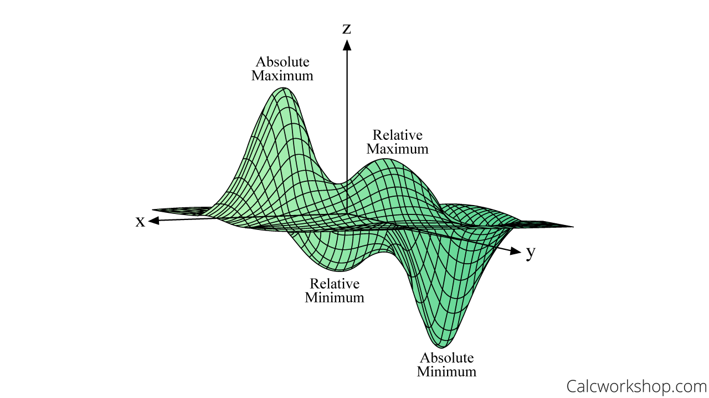
Экстремум функции двух переменных: минимум — самая нижняя точка «чаши», в которой поверхность горизонтальна по всем направлениям сразу. В многомерном случае появляется третий вариант, невозможный на прямой: градиент равен нулю, но точка не является ни минимумом, ни максимумом. Вдоль одних направлений функция здесь растёт, вдоль других убывает — форма как у седла или горного перевала.
Для глубоких сетей это существенно: чтобы точка была минимумом, все собственные значения гессиана должны быть положительны. В пространстве размерности в миллионы вероятность, что все знаки совпадут случайно, ничтожна, — поэтому подавляющее большинство стационарных точек оказываются сёдлами, а не локальными минимумами.
Отсюда практический вывод, который расходится с интуицией: главная беда обучения глубоких сетей — не «застревание в плохом локальном минимуме», как часто пишут в популярных текстах, а долгое ползание по плато вокруг седловых точек, где градиент почти нулевой.
На каждой итерации мы считаем градиенты по батчу и делаем шаг в приблизительном направлении наискорейшего убывания функции потерь. В идеале хотелось бы прийти в глобальный минимум, чтобы максимально точно настроить веса. На практике сеть может застревать в локальных минимумах и на плато — и с этим борются разными приёмами:
- стохастичность самого SGD: шум от батчей помогает выбираться из мелких ям;
- momentum: накопленная «инерция» проносит через плато и мелкие впадины;
- разогрев и расписание learning rate: крупные шаги в начале для исследования ландшафта, мелкие в конце для точной настройки;
- несколько запусков с разной инициализацией.
Контринтуитивный, но важный факт: попадание в глобальный минимум обучающей функции потерь обычно означает переобучение.
Нулевая ошибка на train достигается запоминанием выборки вместе с её шумом. Реально нам нужен минимум ошибки на новых данных, а эту функцию мы вычислить не можем — только оценить по валидации.
Поэтому обучение почти никогда не доводят до точного оптимума: early stopping останавливает процесс, когда валидационная метрика перестала улучшаться, — даже если train-лосс продолжает падать. Иначе говоря, идеальное решение задачи оптимизации и хорошая модель — это разные цели.
Что такое экстремум функции и чем точка экстремума отличается от значения экстремума?
Экстремум — максимальное или минимальное значение функции. Точка экстремума — аргумент $x_0$, где оно достигается; значение экстремума — само $f(x_0)$. Для $f(x)=(x-3)^2$ точка минимума 3, значение минимума 0.
Чем локальный экстремум отличается от глобального?
Локальный — максимум/минимум лишь в окрестности точки, глобальный — на всей области определения. Всякий глобальный экстремум локален, обратное неверно. Градиентный спуск видит только окрестность и потому находит локальные экстремумы.
Как найти экстремум функции одной переменной аналитически?
Вычислить $f'(x)$ и приравнять к нулю (необходимое условие), найти критические точки, проверить знак второй производной ($f''>0$ — минимум, $f''<0$ — максимум). Дополнительно проверить точки, где производная не существует, и границы отрезка.
Почему условие $f'(x)=0$ необходимое, но не достаточное?
Производная обращается в ноль и в точках перегиба: у $f(x)=x^3$ в нуле $f'=0$, но функция всюду возрастает и экстремума там нет. Нужен дополнительный тест — вторая производная или смена знака первой.
Какие аналоги производной и второй производной используются для функций нескольких переменных?
Градиент $\nabla f$ (необходимое условие — $\nabla f = \mathbf{0}$, все частные производные равны нулю) и матрица Гессе; тип стационарной точки определяется знаками её собственных значений.
Что такое седловая точка и почему она важна для глубокого обучения?
Точка с нулевым градиентом, где вдоль одних направлений функция растёт, а вдоль других убывает. Чтобы точка была минимумом, все собственные значения гессиана должны быть положительны; в пространстве огромной размерности это маловероятно, поэтому большинство стационарных точек — сёдла, и главная проблема обучения — плато вокруг них, а не «плохие локальные минимумы».
Почему при обучении нейросетей алгоритм может застрять, и как с этим борются?
Ландшафт потерь имеет плато, овраги и множество стационарных точек, а спуск ориентируется только на локальный наклон. Помогают стохастичность SGD, momentum, расписания learning rate и несколько запусков с разной инициализацией.
Всегда ли нужно стремиться к глобальному минимуму функции потерь?
Нет. Глобальный минимум train-лосса обычно означает запоминание выборки вместе с шумом, то есть переобучение. Нужен минимум ошибки на новых данных, поэтому обучение останавливают по валидационной метрике (early stopping), не доводя до точного оптимума.
-
Градиент
Градиент функции $f(\mathbf{x})=f(x_1,\dots,x_n),\; \mathbf{x}\in\mathbb{R}^n$ — вектор её первых частных производных:
$$\operatorname{grad} f(\mathbf{x}) = \nabla f(\mathbf{x}) = \left(\begin{matrix} &\dfrac {\partial f(\mathbf{x})}{\partial x_1}\\ &\dfrac {\partial f(\mathbf{x})}{\partial x_2}\\ &\vdots\\ &\dfrac {\partial f(\mathbf{x})}{\partial x_{n-1}}\\ &\dfrac {\partial f(\mathbf{x})}{\partial x_n}\\ \end{matrix}\right)_{n\times 1}$$
Простыми словами: градиент — это список ответов на вопрос «насколько функция изменится, если подкрутить вот эту конкретную переменную», собранный в один вектор. Значок $\nabla$ называется «набла».
Градиент показывает направление наискорейшего роста функции. Соответственно, антиградиент $-\nabla f(\mathbf{x})$ — направление наискорейшего убывания.
Кроме направления у него есть и длина: $\|\nabla f\|$ — это крутизна склона в этой точке. Чем градиент длиннее, тем резче меняется функция.
Представьте, что вы стоите на склоне в густом тумане и видите только землю под ногами. Пощупав почву вокруг, вы можете определить, в какую сторону подъём самый крутой, — это и есть градиент. Противоположная сторона, самый крутой спуск, — антиградиент.
Каждая компонента $\frac{\partial f}{\partial x_k}$ — это уклон вдоль одной конкретной оси: «насколько круто идёт вверх, если шагать строго на север». Собрав уклоны по всем осям, вы получаете полную картину и можете найти направление максимального подъёма — оно, вообще говоря, не совпадает ни с одной из осей.
Типовая путаница у новичков. $\frac{\partial f}{\partial x_1}$ — одно число, скорость изменения вдоль одной оси. $\nabla f$ — вектор из всех таких чисел, у него есть и направление, и длина.
Второе уточнение: градиент — не одно фиксированное значение, а функция точки. В каждой точке пространства он свой; «градиент функции» без указания точки — это векторное поле, а не вектор.
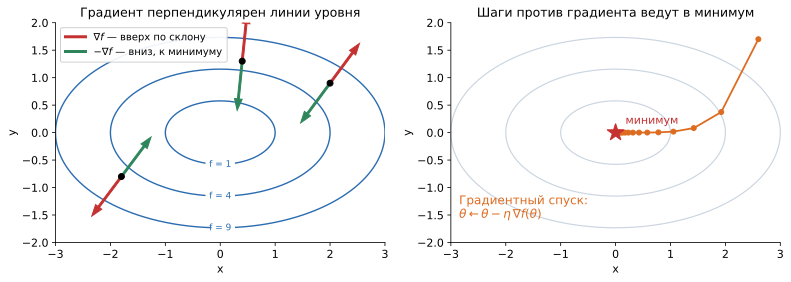
Слева: в каждой точке красная стрелка — градиент, зелёная — антиградиент. Оба всегда перпендикулярны линии уровня, проходящей через точку. Справа: шаги градиентного спуска из начальной точки — каждый шаг идёт против градиента, и траектория постепенно скатывается в минимум, замедляясь по мере того, как склон становится более пологим. Этот факт выглядит как магия, но объясняется в одну фразу. Вдоль линии уровня функция не меняется — это её определение. Значит, скорость изменения в направлении вдоль линии равна нулю. А скорость изменения в направлении $\mathbf{u}$ есть скалярное произведение $\nabla f \cdot \mathbf{u}$. Ноль скалярного произведения означает перпендикулярность.
Отсюда простой практический навык: имея карту линий уровня, направление градиента можно определить глазом — он всегда «поперёк горизонталей», в сторону возрастания. Именно поэтому картинки с линиями уровня и есть основной инструмент для рассуждений об оптимизации.
Точка движется по карте $f(x,y) = x^2 + 2y^2$. Розовая стрелка — градиент $(2x,\ 4y)$ в текущей точке: он всегда перпендикулярен линии уровня (зелёная касательная) и смотрит в сторону роста $f$. Где линии уровня гуще, стрелка длиннее — функция там растёт быстрее. Скорость изменения функции в направлении единичного вектора $\mathbf{u}$ равна
$$D_\mathbf{u} f = \nabla f \cdot \mathbf{u} = \|\nabla f\|\cdot\|\mathbf{u}\|\cdot\cos\alpha = \|\nabla f\|\cos\alpha,$$
где $\alpha$ — угол между направлением $\mathbf{u}$ и градиентом.
Дальше всё решает косинус: он максимален (равен 1) при $\alpha = 0$, то есть когда мы идём точно вдоль градиента; минимален (равен $-1$) при $\alpha = 180°$ — вдоль антиградиента; и равен нулю при $\alpha = 90°$ — то самое движение вдоль линии уровня, при котором функция не меняется.
Это и есть доказательство главного свойства: среди всех направлений градиент даёт наибольший прирост, причём величина этого прироста равна $\|\nabla f\|$.
Считаем частные производные:
$$\nabla f(x, y) = \begin{pmatrix} 2x \\ 2y \end{pmatrix}$$
В точке $(1, 2)$ получаем $\nabla f = (2, 4)$. Читаем результат:
- обе компоненты положительны — при увеличении любой координаты функция растёт;
- вторая компонента вдвое больше первой — по направлению $y$ функция растёт быстрее;
- длина $\|\nabla f\| = \sqrt{4 + 16} \approx 4{,}47$ — это скорость роста в самом крутом направлении;
- антиградиент $(-2, -4)$ указывает в сторону начала координат, где у этой функции минимум. Проверяется прямо: минимум $f$ достигается в $(0,0)$, и вектор $(-2,-4)$ действительно направлен туда.
В точке минимума все частные производные обращаются в ноль, значит $\nabla f = \mathbf{0}$. У нулевого вектора нет направления — и это логично: если вы на дне ямы, «куда спускаться» ответа нет.
На этом и основан критерий остановки: обучение считают сошедшимся, когда норма градиента $\|\nabla L\|$ стала мала. Оговорка та же, что в вопросе про экстремумы: нулевой градиент бывает и в максимумах, и в седловых точках, поэтому малая норма — необходимый признак, но не доказательство того, что найден хороший минимум.
Раз антиградиент указывает вниз, естественный алгоритм минимизации — шагать в его направлении:
$$\theta^{(t+1)} = \theta^{(t)} - \eta\,\nabla L(\theta^{(t)})$$
где $\theta$ — параметры модели, $\eta$ (эта) — скорость обучения (learning rate), задающая длину шага.
Обратите внимание на важную деталь: длина шага пропорциональна не только $\eta$, но и норме градиента. На крутом склоне шаги получаются большими, у пологого дна — маленькими. То есть алгоритм автоматически замедляется по мере приближения к минимуму, что и видно на правой панели картинки выше.

Градиентный спуск для функции двух переменных $f(x,y)=x^2+y^2$: шарик катится по поверхности против градиента и приходит в глобальный минимум $(0,0)$. Ближе ко дну шаги становятся короче — там меньше норма градиента. Градиент даёт только направление; насколько далеко по нему идти, он не подсказывает — за это отвечает $\eta$, и её выбор критичен.
- Слишком большой $\eta$: шаг перелетает через минимум и попадает на противоположный склон, где градиент ещё больше. Следующий шаг перелетает сильнее — процесс расходится, лосс улетает в
nan. - Слишком маленький $\eta$: движение к минимуму занимает тысячи лишних итераций, а на плато обучение фактически останавливается.
Причина в том, что антиградиент — это направление наискорейшего убывания лишь локально, в бесконечно малой окрестности точки. Уйдя далеко, вы попадаете туда, где это уже неверно. Отсюда все практики: подбор $\eta$, расписания её убывания (schedulers), warmup и адаптивные методы вроде Adam.
В ML градиент берут от функции потерь по параметрам: $\nabla_\theta L$. Для каждого веса он отвечает на вопрос «увеличение этого веса сделает ошибку больше или меньше, и насколько сильно?».
Несколько практических деталей, о которых стоит знать:
- на практике считают градиент не по всей выборке, а по батчу — это шумная, но несмещённая оценка настоящего градиента; отсюда «S» в SGD (stochastic);
- backpropagation — это способ посчитать все компоненты $\nabla_\theta L$ за один обратный проход по сети, применяя правило цепочки;
- gradient clipping — обрезание нормы градиента сверху; спасает от «взрыва градиентов», когда одиночный огромный шаг разрушает обученные веса.
Подробнее алгоритмическая сторона разбирается в разделе «Численные методы».
Что такое градиент функции $f(x_1, \ldots, x_n)$?
Вектор её первых частных производных: $\nabla f(\mathbf{x}) = \left(\dfrac{\partial f}{\partial x_1}, \ldots, \dfrac{\partial f}{\partial x_n}\right)^\top$. В каждой точке пространства он свой, то есть это векторное поле, а не одно фиксированное значение.
В каком направлении указывает градиент, что такое антиградиент и что означает его длина?
Градиент указывает в направлении наискорейшего возрастания функции, антиградиент $-\nabla f$ — наискорейшего убывания. Длина $\|\nabla f\|$ — крутизна склона, то есть скорость изменения в этом наилучшем направлении.
Почему именно градиент даёт наискорейший рост?
Скорость изменения в направлении $\mathbf{u}$ равна $\nabla f \cdot \mathbf{u} = \|\nabla f\|\cos\alpha$, где $\alpha$ — угол с градиентом. Максимум достигается при $\alpha = 0$, то есть вдоль самого градиента; при $\alpha = 90°$ производная по направлению равна нулю.
Почему градиент перпендикулярен линии уровня?
Вдоль линии уровня функция не меняется, значит производная по этому направлению равна нулю: $\nabla f \cdot \mathbf{u} = 0$. Нулевое скалярное произведение и означает перпендикулярность.
Найдите $\nabla f$ для $f(x, y) = x^2 + y^2$ в точке $(1, 2)$ и объясните результат.
$\nabla f = (2x, 2y)^\top$, в точке $(1,2)$ это $(2,4)^\top$: функция растёт быстрее вдоль $y$, длина градиента $\sqrt{20} \approx 4{,}47$, а антиградиент $(-2,-4)$ указывает в сторону минимума в начале координат.
Чему равен градиент в точке минимума и можно ли по нему судить о сходимости?
В минимуме все частные производные нулевые, поэтому $\nabla f = \mathbf{0}$. Малая норма градиента — необходимый признак сходимости, но не достаточный: нулевой градиент бывает также в максимумах и седловых точках.
Как используется градиент в обучении нейросетей?
Параметры обновляются по правилу $\theta^{(t+1)} = \theta^{(t)} - \eta\nabla L(\theta^{(t)})$, где $\eta$ — learning rate. Градиент вычисляется backpropagation'ом за один обратный проход, на практике — по батчу (стохастическая оценка), при необходимости с обрезанием нормы (gradient clipping).
Почему выбор learning rate критичен?
Градиент задаёт только направление и верен лишь локально. Слишком большой шаг перелетает минимум и приводит к расходимости, слишком маленький — к чрезвычайно медленному обучению. Отсюда расписания learning rate, warmup и адаптивные оптимизаторы.
-
Метрика (расстояние)
Функция $\rho(x,y)$ называется метрикой и определяет расстояние между точками $x,y$ в $\mathbb{R}^n$, если выполнены четыре аксиомы:
- $\rho(x,y)=0 \Leftrightarrow x=y$ — тождество
- $\rho(x,y) \geq 0$ — неотрицательность
- $\rho(x,y)=\rho(y,x)$ — симметричность
- $\rho(x,z)\leq \rho(x,y)+\rho(y,z)$ — неравенство треугольника
Простыми словами: метрика — это любой способ измерять «насколько два объекта далеки друг от друга», который ведёт себя так, как мы интуитивно ожидаем от расстояния.
Аксиомы — не формальность: каждая запрещает конкретную нелепость.
- Тождество. Расстояние нулевое только между совпадающими объектами. Без него два разных объекта могли бы оказаться «на нулевом расстоянии», и алгоритм ближайших соседей перестал бы их различать.
- Неотрицательность. «Минус три километра» смысла не имеет.
- Симметричность. От $A$ до $B$ столько же, сколько от $B$ до $A$. Нарушается, например, для времени в пути с учётом пробок или односторонних улиц — и это одна из причин, почему такие «расстояния» метриками не являются.
- Неравенство треугольника. Через промежуточную точку не короче, чем напрямую. Самая содержательная аксиома: именно она позволяет строить структуры вроде KD-дерева и отсекать заведомо далёких кандидатов, не вычисляя расстояния до них.
Пусть $x,y\in\mathbb{R}^n$ — точки в $n$-мерном пространстве. В $n$-мерном векторе находится $n$ компонент: $x=(x_1,x_2, \dots,x_{n-1},x_n)$. Чаще всего используют:
Евклидова метрика: $$\rho(x,y)=\sqrt{\sum_{i=1}^n (x_i-y_i)^2}$$
Манхэттенская метрика (метрика городских кварталов): $$\rho(x,y)=\sum_{i=1}^n |x_i-y_i|$$
Обе устроены по одной схеме: посмотреть на разницу по каждой координате отдельно, а потом свести все разницы в одно число.
- $x_i - y_i$ — расхождение по $i$-му признаку (например, разница в возрасте, разница в доходе).
- Дальше от знака избавляются: квадратом в евклидовой, модулем в манхэттенской.
- Всё складывается; в евклидовой в конце берётся корень, чтобы вернуться к исходному масштабу (иначе величина имела бы размерность «единиц в квадрате»).
Вся разница между метриками — в том, как именно наказывается расхождение по одной координате. Квадрат делает крупные расхождения непропорционально важными, модуль считает их линейно.
Одна и та же пара точек, четыре «расстояния»: манхэттенское $d_1$ (ломаная), евклидово $d_2$ (прямая), $d_\infty$ (наибольшая из проекций) и косинус угла между векторами. При движении точки $B$ они меняются по-разному; косинусная мера видит только направление, а не длину. - Евклидова — расстояние «по прямой», по воздуху. В двумерном случае $\sqrt{(x_1-y_1)^2 + (x_2-y_2)^2}$ — это в точности теорема Пифагора: катеты — расхождения по осям, гипотенуза — искомое расстояние.
- Манхэттенская — по имени района Нью-Йорка с прямоугольной сеткой улиц. Такси не может ехать сквозь здания, оно движется только вдоль улиц: сначала столько-то кварталов на восток, потом столько-то на север. Отсюда второе название — «расстояние городских кварталов» (taxicab distance).
Ключевое наблюдение с картинки: у манхэттенского расстояния кратчайший путь не единственный. Любой ступенчатый маршрут без возвратов даёт одну и ту же длину, тогда как евклидов кратчайший путь ровно один.
Два объекта: $x = (0, 0)$, $y = (3, 4)$.
- Евклидова: $\sqrt{3^2 + 4^2} = \sqrt{9+16} = \sqrt{25} = 5$
- Манхэттенская: $|3-0| + |4-0| = 3 + 4 = 7$
Манхэттенское расстояние всегда не меньше евклидова — прямая короче любого обхода по клеткам. Совпадают они только тогда, когда точки различаются не более чем по одной координате (в частности, для совпадающих точек оба расстояния равны нулю).
- Чебышёва ($L_\infty$): $\rho(x,y) = \max_i |x_i - y_i|$ — берётся только самое большое расхождение. Так ходит король в шахматах: диагональный шаг стоит столько же, сколько прямой.
- Косинусное расстояние: $1 - \cos(x, y)$ — измеряет угол между векторами, игнорируя их длину. Основная метрика для эмбеддингов текстов: два документа на одну тему считаются похожими независимо от того, длинный текст или короткий.
- Расстояние Хэмминга: число позиций, в которых две строки различаются. Для категориальных и бинарных признаков.
- Расстояние Левенштейна: минимальное число вставок, удалений и замен символов, чтобы превратить одну строку в другую. Основа исправления опечаток и нечёткого поиска.
Все они удовлетворяют четырём аксиомам — кроме косинусного расстояния, у которого нарушается неравенство треугольника (поэтому строго говоря оно не метрика, хотя его так и называют).
В ML метрика — ключевое решение в любом алгоритме, опирающемся на близость объектов: KNN ($k$ ближайших соседей), кластеризация (k-means, DBSCAN), поиск похожих товаров, детекция аномалий.
Меняя метрику, вы меняете сам смысл слова «похожие»:
- евклидова — обычный выбор для непрерывных признаков сопоставимого масштаба;
- манхэттенская — устойчивее к выбросам, потому что не возводит расхождения в квадрат; часто ведёт себя лучше в пространствах высокой размерности;
- косинусная — когда важно направление, а не величина: тексты, эмбеддинги, профили предпочтений.
Правильного ответа «в вакууме» не существует — метрика подбирается под данные и проверяется по качеству на валидации.
Это ошибка, которая портит результат чаще всего, а выглядит совершенно безобидно.
Пусть объекты описываются возрастом (20–70 лет) и годовым доходом (300 000–3 000 000 ₽). Считаем евклидово расстояние: разница в возрасте даёт вклад порядка $50^2 = 2500$, разница в доходе — порядка $10^{12}$. Возраст исчезает: он влияет на результат на уровне погрешности округления.
Получается, что KNN «сам по себе» решил учитывать только доход — не потому, что тот важнее, а потому, что он измеряется в других единицах. Достаточно перевести доход в тысячи рублей, и ответ модели изменится.
Лечение: перед любым алгоритмом на расстояниях признаки приводят к сопоставимому масштабу —
StandardScaler(вычесть среднее, поделить на стандартное отклонение) илиMinMaxScaler(сжать в отрезок $[0,1]$). Причём параметры масштабирования считаются по обучающей выборке и применяются к тесту, иначе получится утечка.Вторая ловушка тоньше. При росте числа признаков расстояния между всеми парами объектов становятся почти одинаковыми: отношение расстояния до ближайшего соседа к расстоянию до самого дальнего стремится к единице.
Причина в том, что в сумме из сотен слагаемых случайные расхождения по отдельным координатам усредняются, и различия между парами объектов размываются. Понятие «ближайший сосед» теряет смысл: ближайший оказывается почти таким же далёким, как случайный.
Что делают на практике: снижают размерность (PCA, отбор признаков, обучаемые эмбеддинги), переходят на косинусное расстояние либо на $L_1$ вместо $L_2$ — они деградируют чуть медленнее. Именно поэтому «наивный KNN по тысяче сырых признаков» почти никогда не работает, а KNN по 64-мерному эмбеддингу — работает.
Какие четыре аксиомы должна выполнять функция $\rho(x, y)$, чтобы называться метрикой?
Тождество ($\rho(x,y)=0 \Leftrightarrow x=y$), неотрицательность ($\rho \geq 0$), симметричность ($\rho(x,y)=\rho(y,x)$) и неравенство треугольника ($\rho(x,z) \leq \rho(x,y)+\rho(y,z)$).
Зачем нужно неравенство треугольника?
Оно гарантирует, что путь через промежуточную точку не короче прямого. Это позволяет строить индексные структуры (KD-дерево, ball-tree) и отсекать заведомо далёкие объекты без вычисления расстояния до них.
Как вычисляются евклидова и манхэттенская метрики и в чём разница?
Евклидова: $\rho(x,y)=\sqrt{\sum_i (x_i-y_i)^2}$ — расхождения возводятся в квадрат. Манхэттенская: $\rho(x,y)=\sum_i |x_i-y_i|$ — берутся модули. Квадрат делает крупные расхождения непропорционально значимыми, модуль считает их линейно.
Какова геометрическая интерпретация обеих метрик?
Евклидова — расстояние по прямой (теорема Пифагора, «по воздуху»). Манхэттенская — путь по сетке улиц, движение только вдоль осей; кратчайший путь при этом не единственный, все ступенчатые маршруты имеют одинаковую длину.
Какие ещё метрики применяются в ML?
Чебышёва ($\max_i|x_i-y_i|$), косинусное расстояние (угол между векторами — для эмбеддингов и текстов), Хэмминга (число различающихся позиций — для категориальных признаков), Левенштейна (число правок между строками).
Почему выбор метрики важен в алгоритме KNN?
Метрика определяет, какие объекты считаются похожими, а значит — и предсказание. Евклидова подходит для непрерывных признаков сопоставимого масштаба, манхэттенская устойчивее к выбросам, косинусная нужна, когда важно направление вектора, а не его длина.
Почему перед KNN обязательно масштабировать признаки?
Признак с большим численным диапазоном (доход в рублях против возраста в годах) подавляет остальные в сумме квадратов, и модель фактически учитывает только его. Помогает
StandardScalerилиMinMaxScaler, обученный на train и применённый к test.Что такое проклятие размерности применительно к расстояниям?
При большом числе признаков расстояния между всеми парами объектов становятся почти одинаковыми, и понятие «ближайший сосед» теряет смысл. Лечится снижением размерности (PCA, эмбеддинги), отбором признаков или переходом к косинусной либо $L_1$-метрике.
-
Норма
Норма вектора задаёт его «длину» в рассматриваемом пространстве. Обозначается через $\| \cdot \|$. Пусть $\mathbf{x} \in \mathbb{R}^n, x=(x_1,\dots,x_n)$. Тогда $L_p$-норма этого вектора:
$$\|x\|_p= \sqrt[p]{\sum_{i=1}^n |x_i|^p}$$
Простыми словами: норма отвечает на вопрос «насколько этот вектор большой», сводя набор из $n$ чисел к одному неотрицательному числу.
Разница простая: норма измеряет один вектор, метрика — расстояние между двумя точками.
Связаны они напрямую: любая норма порождает метрику по формуле
$$\rho(x, y) = \|x - y\|$$
То есть «расстояние между $x$ и $y$» = «длина вектора разности». Отсюда и знакомая параллель: $L_2$-норма порождает евклидову метрику, $L_1$-норма — манхэттенскую. Это те же самые формулы, просто одна применяется к вектору, а другая — к их разности.
Обратное неверно: не всякая метрика порождается нормой (например, расстояние Левенштейна между строками — метрика, но никакой «длины строки» за ней не стоит).
Норма — это функция $\|\cdot\|: \mathbb{R}^n \to \mathbb{R}$, удовлетворяющая трём условиям:
- $\|x\| \ge 0$, причём $\|x\| = 0$ только для нулевого вектора — неотрицательность;
- $\|\alpha x\| = |\alpha| \cdot \|x\|$ — однородность: растянув вектор вдвое, вдвое увеличиваем и его длину;
- $\|x + y\| \le \|x\| + \|y\|$ — неравенство треугольника.
Однородность — то, чего нет у метрики в общем виде, и именно она делает норму «длиной», а не просто мерой размера.
При $p=1$ получаем манхэттенскую норму ($L_1$-норму):
$$\|x\|_1= \sum_{i=1}^n |x_i|,$$
при $p=2$ — евклидову норму ($L_2$-норму):
$$\|x\|_2= \sqrt{\sum_{i=1}^n x_i^2}$$
При $p \to \infty$ получается норма Чебышёва $\|x\|_\infty = \max_i |x_i|$ — из суммы «выживает» только самая большая по модулю компонента.
Возьмём $x = (3, -4)$:
- $\|x\|_1 = |3| + |-4| = 7$
- $\|x\|_2 = \sqrt{9 + 16} = 5$
- $\|x\|_\infty = \max(3, 4) = 4$
Порядок $\|x\|_\infty \le \|x\|_2 \le \|x\|_1$ выполняется всегда: чем больше $p$, тем сильнее норма «фокусируется» на самой крупной компоненте и тем меньше получается результат.
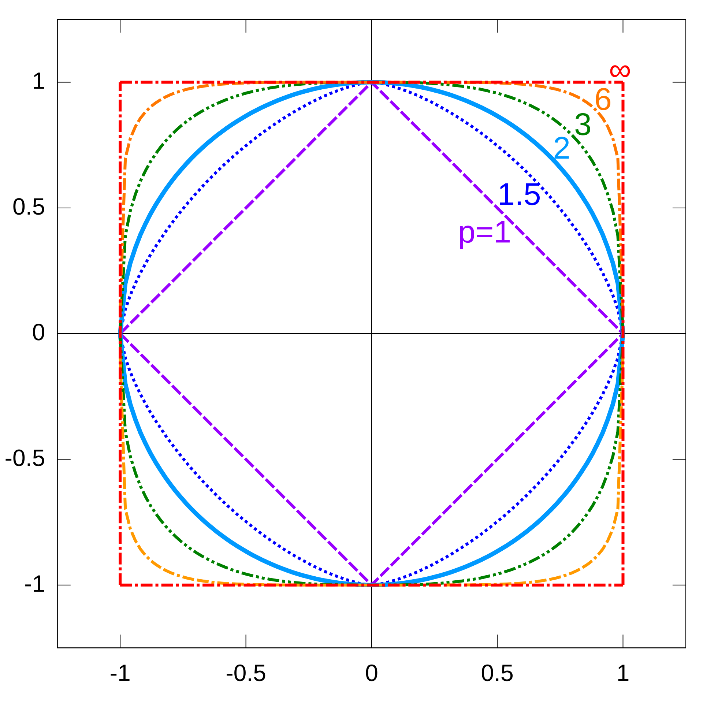
Множество точек с $\|x\|_p = 1$ при разных $p$ — то есть «все векторы длины 1» в каждой норме. При $p=2$ это обычная окружность, при $p=1$ — ромб (квадрат, повёрнутый на 45°), при $p \to \infty$ — квадрат со сторонами, параллельными осям. Картинка выше — не декоративная: она напрямую объясняет, почему $L_1$-регуляризация обнуляет веса, а $L_2$ — нет.
У ромба ($L_1$) есть углы, и лежат они точно на координатных осях, то есть в точках вида $(1,0)$ и $(0,1)$ — где одна из компонент равна нулю. У окружности ($L_2$) углов нет вовсе, все точки равноправны.
При обучении с регуляризацией решение оказывается там, где линии уровня функции потерь касаются «шара» нормы. Касание гладкой окружности происходит в произвольной точке, а вот касание ромба с наибольшей вероятностью приходится именно на угол — то есть на точку, где часть координат обнулилась.
Отсюда и наблюдаемое поведение: $L_1$ даёт разреженные решения (многие веса ровно нули), $L_2$ — просто маленькие.
Единичный шар — все векторы с $\|x\|_p = 1$ — при непрерывном изменении $p$: ромб при $p=1$, круг при $p=2$, квадрат при $p \to \infty$. Чем больше $p$, тем сильнее норма определяется самой большой по модулю координатой. $L_1$-норма используется в регуляризаторе LASSO:
$$L = \underbrace{\mathcal{L}}_{\text{loss}} + \underbrace{\alpha \|w\|_1}_{\text{penalty}} = \mathcal{L} + \alpha \sum_w |w|,$$
а $L_2$-норма — в Ridge-регуляризаторе:
$$L = \underbrace{\mathcal{L}}_{\text{loss}} + \underbrace{\alpha \|w\|_2^2}_{\text{penalty}} = \mathcal{L} + \alpha \sum_w w^2,$$
где $\alpha$ называется штрафным коэффициентом, weight decay или коэффициентом регуляризации.
Суммарная функция $L$ состоит из двух конкурирующих слагаемых:
- $\mathcal{L}$ — обычная ошибка: она хочет, чтобы модель как можно точнее описала обучающие данные;
- $\alpha\|w\|$ — штраф за величину весов: он хочет, чтобы модель была как можно проще.
Оптимизация ищет компромисс между ними, и коэффициент $\alpha$ определяет, чьё мнение важнее. При $\alpha = 0$ регуляризации нет вовсе; при очень большом $\alpha$ модель предпочтёт обнулить все веса и ничего не выучить.
Зачем вообще штрафовать большие веса: большой вес означает, что модель сильно реагирует на маленькое изменение признака. Такая чувствительность — типичный признак подгонки под шум. Ограничивая веса, мы ограничиваем «резкость» модели и снижаем переобучение.
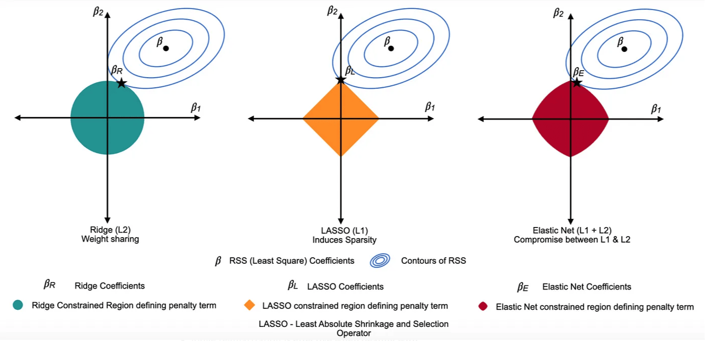
Регуляризаторы LASSO ($L_1$), Ridge ($L_2$) и их комбинация — ElasticNet. Видно, как форма ограничивающей области определяет, попадёт ли решение на ось (обнулив признак) или останется внутри. Свойство LASSO ($L_1$) Ridge ($L_2$) Что делает с весами обнуляет часть ровно в 0 уменьшает все, но не до нуля Побочный эффект автоматический отбор признаков равномерное сжатие Коррелированные признаки оставляет одного «представителя», остальные обнуляет распределяет вес между всеми Когда выбирать признаков много, полезных мало, нужна интерпретируемость признаки все более-менее полезны, есть мультиколлинеарность ElasticNet — комбинация обоих штрафов: $\alpha_1\|w\|_1 + \alpha_2\|w\|_2^2$. Берёт разреженность от $L_1$ и устойчивость к коррелированным признакам от $L_2$.
- Weight decay в оптимизаторах — добавление к градиенту слагаемого, пропорционального самому весу. В обычном SGD это в точности $L_2$-регуляризация. Но в AdamW штраф намеренно «отвязан» (decoupled): он применяется к весам напрямую, минуя адаптивное масштабирование Adam, и потому уже не эквивалентен добавке $\alpha\|w\|_2^2$ к функции потерь — ради этой разницы AdamW и появился.
- Gradient clipping — обрезание нормы градиента: если $\|\nabla L\| > c$, градиент масштабируют так, чтобы норма стала равна $c$. Направление сохраняется, длина ограничивается — защита от «взрыва градиентов» в рекуррентных сетях и трансформерах.
- Batch/Layer normalization — приведение активаций к сопоставимому масштабу, тоже операция про величину векторов.
- Нормализация эмбеддингов до единичной $L_2$-нормы: после этого скалярное произведение векторов равно косинусу угла между ними, и поиск похожих сводится к простому матричному умножению.
Штраф $\alpha\sum w^2$ наказывает все веса одинаково — но вес признака зависит от того, в каких единицах этот признак измерен.
Если доход задан в рублях, его коэффициент будет крошечным (иначе предсказание улетит), и регуляризация его почти не заметит. Если тот же доход перевести в миллионы, коэффициент вырастет в миллион раз — и штраф ударит по нему в первую очередь, вплоть до обнуления полезного признака.
Вывод: перед Ridge и LASSO признаки обязательно масштабируют (
StandardScaler). Иначе сила регуляризации будет зависеть не от полезности признака, а от выбора единиц измерения. Ровно та же логика, что и в предыдущем вопросе про метрики.Смещение $w_0$ (intercept, bias) в штраф обычно не включают. Причина: оно отвечает за общий уровень предсказания, а не за чувствительность к признакам, и его обнуление означало бы принудительное требование «средний прогноз равен нулю» — бессмысленное ограничение.
В
sklearnэто учтено по умолчанию:RidgeиLassoне регуляризуютintercept_. Но если вы реализуете регуляризацию вручную, про это легко забыть и получить систематически смещённые предсказания.Что такое норма вектора и как записывается $L_p$-норма?
Норма задаёт «длину» вектора — сводит набор из $n$ чисел к одному неотрицательному числу. $L_p$-норма: $\|x\|_p = \sqrt[p]{\sum_{i=1}^n |x_i|^p}$.
Как связаны норма и метрика?
Всякая норма порождает метрику по формуле $\rho(x,y) = \|x-y\|$: расстояние — это длина вектора разности. $L_2$-норма даёт евклидову метрику, $L_1$ — манхэттенскую. Обратное неверно: не всякая метрика порождается нормой.
Чему равны $L_1$-, $L_2$- и $L_\infty$-нормы для вектора $x = (3,-4)$?
$\|x\|_1 = 7$, $\|x\|_2 = 5$, $\|x\|_\infty = 4$. В общем случае $\|x\|_\infty \le \|x\|_2 \le \|x\|_1$: чем больше $p$, тем сильнее норма ориентируется на максимальную компоненту.
Как $L_1$- и $L_2$-нормы применяются в регуляризации?
$L_1$ — в LASSO: $L = \mathcal{L} + \alpha\|w\|_1$, обнуляет неважные веса. $L_2$ — в Ridge: $L = \mathcal{L} + \alpha\|w\|_2^2$, уменьшает все веса, не обнуляя. ElasticNet комбинирует оба штрафа.
Почему именно $L_1$ даёт разреженные решения?
Единичный «шар» $L_1$ — ромб с углами на координатных осях, то есть в точках, где часть координат равна нулю. Линии уровня функции потерь с наибольшей вероятностью касаются ромба именно в углу. У $L_2$ шар — гладкая сфера без выделенных точек, поэтому обнуления не происходит.
Что такое коэффициент регуляризации $\alpha$ и как он влияет на обучение?
$\alpha$ задаёт баланс между точностью на обучающих данных и простотой модели. Чем он больше, тем сильнее штрафуются большие веса, тем «глаже» модель и меньше переобучение; при слишком большом $\alpha$ модель недообучается.
Почему перед Ridge и LASSO нужно масштабировать признаки?
Штраф одинаков для всех весов, а величина веса зависит от единиц измерения признака. Без масштабирования сила регуляризации определяется выбором единиц, а не полезностью признака, и полезный признак может быть обнулён просто из-за своего масштаба.
Как норма используется в глубоком обучении помимо регуляризации?
Weight decay (в SGD — в точности $L_2$-регуляризация; в AdamW — «отвязанный» штраф, применяемый к весам в обход адаптивного масштабирования, и потому уже не эквивалентный $L_2$), gradient clipping (ограничение нормы градиента с сохранением направления), batch/layer normalization и нормализация эмбеддингов до единичной длины, после которой скалярное произведение равно косинусной близости.